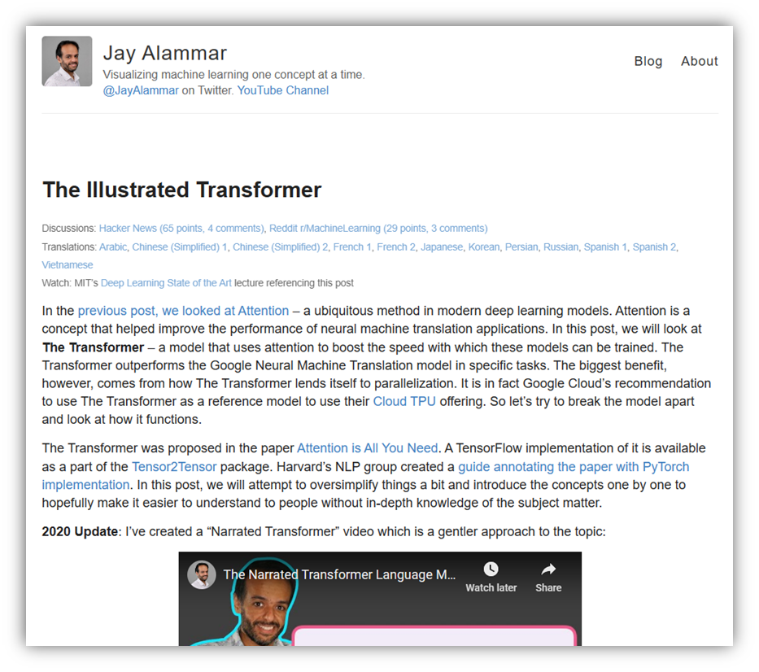
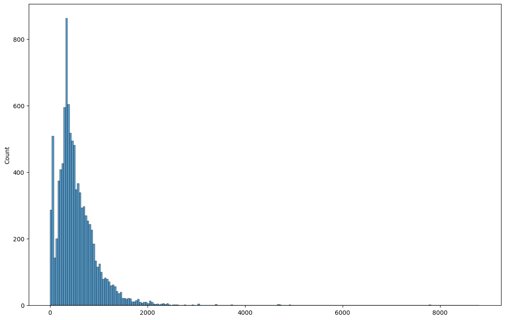
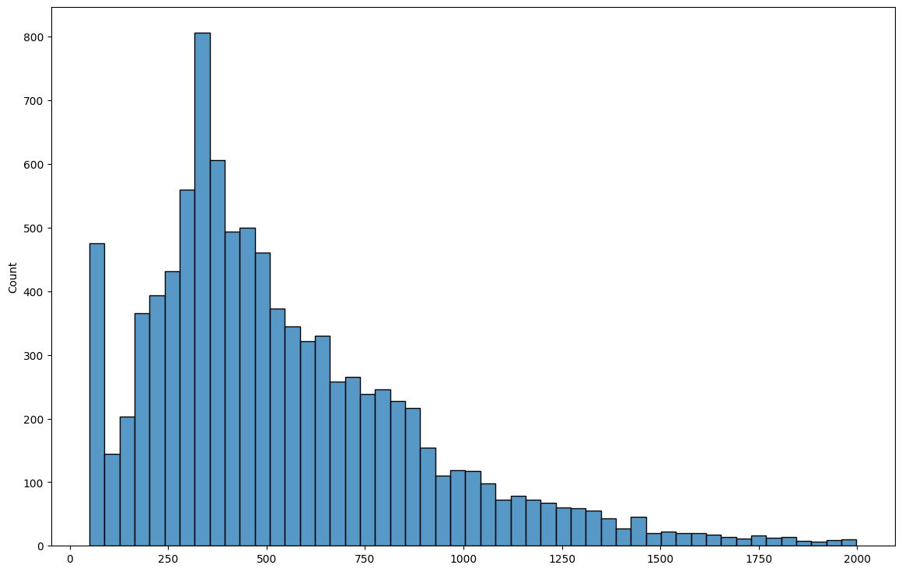

Transformers
Consider the following two sentences:
- She waited at the river bank
- She was looking at her bank account
Under the Glove and Word2Vec embeddings, both of the uses of the word bank would have the same vector representation. Which is a problem as the word 'bank' refers to two completely different things based on the context. Fixed embedding schemes such as Word2Vec can't solve for this.
Transformer based language models solve for this by creating context specific embeddings. Which means instead of creating a static word-to-vector embedding, they provide dynamic embeddings depending upon the context. You provide the model the entire sentence, and it returns an embedding paying attention to all other words in the context of which a word appears.
Transformers use something called an ‘attention mechanism’ to compute the embedding for a word in a sentence by also considering the words adjacent to the given word. By combining the transformer architecture with self-supervised learning, these models have achieved tremendous success as is evident in the tremendous popularity of large language models. The transformer architecture has been successfully applied to vision and audio tasks as well, and is currently all the rage to the point of making past deep learning architectures completely redundant.
Attention is All You Need
A seminal 2017 paper by Vaswani et al from the Google Brain team introduced and popularized the transformers architecture. The paper represented a turning point for deep learning practitioners, and transformers were soon applied to solving a wide variety of problems. The original paper can be downloaded from https://arxiv.org/abs/1706.03762.
The original paper on transformers makes difficult reading for a non-technical audience. A more intuitive and simpler explanation of the paper was provided by Jay Alammar in a blog post on GitHub that received immense popularity and accolades. Jay's blog post is available at https://jalammar.github.io/illustrated-transformer/.

The core idea behind self-attention is to derive embeddings for a word based on the all the words that surround it, including a consideration of the order they appear in. There is a lot matrix algebra involved, but the essence of the idea is to take into account the presence of other words before and after a given word, and use their embeddings as weights in computing the context sensitive embedding for a given word.
This means the same word would have a different embedding vector when used in different sentences, and the model will need the entire sentence or document as an input to compute the embeddings of the word. All of these computations end up being compute heavy as the number of weights and biases explodes when compared to a traditional FCNN or RNN. These transformer models are self-trained on large amounts of text (generally public domain text), and require computational capabilities beyond the reach of the average person. These new transformer models tend to have billions of parameters, and are appropriately called 'Large Language Models', or LLMs for short.
Large corporations such as Google, Facebook, OpenAI and others have come up with their own LLMs, some of which are open source, and others not. Models that are not open sourced can be accessed through APIs, which meanse users send their data to the LLM provider (such as OpenAI), and the provider returns the answer. These providers charge for usage based on the volumes of data they have to process.
Models that are open sourced can be downloaded in their entirety on the user's infrastructure, and run locally without incremental cost except that of the user's hardware and compute costs.
LLMs come in a few different flavors, and current thinking makes the below distinctions. However this can change rapidly as ever advanced models are released:
-
Foundational Models – Base models, cannot be used out of the box as not trained for anything other than predicting the next word
-
Instruction Tuned Models – Have been trained to follow instructions
-
Fine-tuned Models – Have been trained on additional text data specific to the user's situation
The line demarcating the above can be fuzzy and the LLM space is evolving rapidly with different vendors competing to meet their users' needs in the most efficient way.
Sentence Transformers
(https://www.sbert.net/)
Sentence BERT is a library that allows the creation of sentence embeddings based on transformer models, including nearly all models available on Huggingface. A 'sentence' does not mean a literal sentence, it refers to any text.
Once we have embeddings available, there is no limit to what we can do with it. We can pass the embeddings to traditional or network based models to drive classification, regression, or perform clustering of text data using any clustering method such as k-means or hierarchical clustering.
We will start with sentence BERT, and look at some examples of the kinds of problems we can solve with it.
Get some text data
We import about 10,000 random articles that were collected using web scraping the net for articles that address cybersecurity. Some item are long, some are short, and others are not really even articles as those might just be ads or other website notices.
Local saving and loading of models
Save with:
from sentence_transformers import SentenceTransformer
model = SentenceTransformer('all-roberta-large-v1')
model.save(path)
Load with:
from sentence_transformers import SentenceTransformer
model = SentenceTransformer(path)
# Set default locations for downloaded models
# If you are running things on your own hardware,
# you can ignore this cell completely.
import os
if os.name != 'nt': # Do this only if in a non-Windows environment
if 'instructor' in os.getcwd(): # Set default model locations when logged in as instructor
os.environ['TRANSFORMERS_CACHE'] = '/home/instructor/shared/huggingface'
os.environ['SENTENCE_TRANSFORMERS_HOME'] = '/home/instructor/shared/huggingface'
else: # Set default model locations when logged in as a student
os.environ['TRANSFORMERS_CACHE'] = '/home/jovyan/shared/huggingface'
os.environ['SENTENCE_TRANSFORMERS_HOME'] = '/home/jovyan/shared/huggingface'
# Usual library imports
import pandas as pd
import numpy as np
import matplotlib.pyplot as plt
import seaborn as sns
import tqdm
import torch
pwd
'/home/instructor/shared'
# Import the data from a pickle file
df = pd.read_pickle('sample.pkl')
# How many rows and columns in our dataframe
df.shape
(10117, 7)
# We look at the dataframe below. The column of interest to us is the column titled 'text'
df
| title | summary_x | URL | keywords | summary_y | text | published_date | |
|---|---|---|---|---|---|---|---|
| 0 | Friday Squid Blogging: On Squid Brains | <p>Interesting <i>National Geographic</i> <a h... | https://www.schneier.com/blog/archives/2021/08... | working,school,technologist,security,schneier,... | About Bruce SchneierI am a public-interest tec... | About Bruce Schneier\n\nI am a public-interest... | 2021-08-20 21:18:14 |
| 1 | More on Apple’s iPhone Backdoor | <p>In this post, I’ll collect links on A... | https://www.schneier.com/blog/archives/2021/08... | service,using,wiserposted,iphone,security,appl... | More on Apple’s iPhone BackdoorIn this post, I... | More on Apple’s iPhone Backdoor\n\nIn this pos... | 2021-08-20 13:54:51 |
| 2 | T-Mobile Data Breach | <p>It’s a <a href="https://www.wired.com... | https://www.schneier.com/blog/archives/2021/08... | tmobiles,numbers,data,tmobile,security,schneie... | It’s a big one:As first reported by Motherboar... | It’s a big one:\n\nAs first reported by Mother... | 2021-08-19 11:17:56 |
| 3 | Apple’s NeuralHash Algorithm Has Been Reverse-... | <p>Apple’s <a href="https://www.apple.co... | https://www.schneier.com/blog/archives/2021/08... | using,step,neuralhash,security,schneier,tests,... | Apple’s NeuralHash Algorithm Has Been Reverse-... | Apple’s NeuralHash Algorithm Has Been Reverse-... | 2021-08-18 16:51:17 |
| 4 | Upcoming Speaking Engagements | <p>This is a current list of where and when I ... | https://www.schneier.com/blog/archives/2021/08... | comments,pageposted,speakthe,scheduled,engagem... | Upcoming Speaking EngagementsThis is a current... | Upcoming Speaking Engagements\n\nThis is a cur... | 2021-08-14 17:01:46 |
| ... | ... | ... | ... | ... | ... | ... | ... |
| 10112 | Nigeria’s Autochek acquires Cheki Kenya and Ug... | Nigerian automotive tech company Autochek toda... | http://feedproxy.google.com/~r/Techcrunch/~3/0... | autochek,kenya,cheki,acquires,roam,ghana,ugand... | Nigerian automotive tech company Autochek toda... | Nigerian automotive tech company Autochek toda... | 2021-09-06 07:56:18 |
| 10113 | President of El Salvador says the country boug... | <a href="https://www.coindesk.com/policy/2021/... | http://www.techmeme.com/210907/p2#a210907p2 | common,el,work,law,tender,theres,comes,salvado... | — The Starters — Apple Inc. and Tesla Inc. hav... | — The Starters — Apple Inc. and Tesla Inc. hav... | 2021-09-07 04:15:02 |
| 10114 | A look at the growing movement of "self-hostin... | <a href="https://www.vice.com/en/article/pkb4n... | http://www.techmeme.com/210906/p10#a210906p10 | friends,john,market,run,nft,week,truly,review,... | — Hello friends, and welcome back to Week in R... | — Hello friends, and welcome back to Week in R... | 2021-09-06 17:50:01 |
| 10115 | CoinGecko: Solana's SOL token has more than tr... | <a href="https://www.bloomberg.com/news/articl... | http://www.techmeme.com/210906/p7#a210906p7 | sol,startup,weeks,run,kind,solanas,smbs,resour... | — Factorial, a startup out of Barcelona that h... | — Factorial, a startup out of Barcelona that h... | 2021-09-06 13:15:01 |
| 10116 | Who is Starlink really for? | Alan Woodward lives out in the countryside, in... | https://www.technologyreview.com/2021/09/06/10... | really,areas,satellites,internet,rural,compani... | And for many customers, especially commercial ... | But it’s not totally clear whether rural Ameri... | 2021-09-06 10:00:00 |
10117 rows × 7 columns
# We create a dataframe with just the story text, and call it corpus
corpus = df[['text']]
corpus
| text | |
|---|---|
| 0 | About Bruce Schneier\n\nI am a public-interest... |
| 1 | More on Apple’s iPhone Backdoor\n\nIn this pos... |
| 2 | It’s a big one:\n\nAs first reported by Mother... |
| 3 | Apple’s NeuralHash Algorithm Has Been Reverse-... |
| 4 | Upcoming Speaking Engagements\n\nThis is a cur... |
| ... | ... |
| 10112 | Nigerian automotive tech company Autochek toda... |
| 10113 | — The Starters — Apple Inc. and Tesla Inc. hav... |
| 10114 | — Hello friends, and welcome back to Week in R... |
| 10115 | — Factorial, a startup out of Barcelona that h... |
| 10116 | But it’s not totally clear whether rural Ameri... |
10117 rows × 1 columns
# Next, we examine how long the articles are. Perhaps we want to
# throw out the outliers, ie really short articles, which may
# not really be articles, and also very long articles.
#
# We do this below, looking at the mean and distribution of article lengths
article_lengths = [(len(x.split())) for x in (corpus.text)]
article_lengths = pd.Series(article_lengths)
plt.figure(figsize = (14,9))
sns.histplot(article_lengths)
pd.Series(article_lengths).describe()
count 10117.000000
mean 559.145003
std 501.310623
min 0.000000
25% 293.000000
50% 450.000000
75% 724.000000
max 8807.000000
dtype: float64

# Let us see how many articles more than 2000 words
len(article_lengths[article_lengths>2000])
125
# Let us see how many articles less than 50 words
len(article_lengths[article_lengths<50])
349
# Let us just keep the regular sized articles, ie those greater than 50
# words, and also remove the excessively long articles. We are still
# left with a sizable number in our corpus.
print(10117-349-125)
len(article_lengths[(article_lengths[article_lengths>49]) & (article_lengths[article_lengths<2000])])
9643
9643
corpus = corpus[(article_lengths[article_lengths>49]) & (article_lengths[article_lengths<2000])]
# Next we look at the distribution again
article_lengths = [(len(x.split())) for x in (corpus.text)]
article_lengths = pd.Series(article_lengths)
plt.figure(figsize = (14,9))
sns.histplot(article_lengths)
pd.Series(article_lengths).describe()
count 9643.000000
mean 542.166753
std 346.111949
min 50.000000
25% 308.000000
50% 458.000000
75% 722.000000
max 1998.000000
dtype: float64

Our code becomes really slow if we use all 9600 articles, so we randomly pick just 100 articles from the corpus. This is just so we can finish in time with the demos. When you have more time, you can run the code for all the articles too.
# We take only a sample of the entire corpus
# If we want to consider the entire set, we do not need to run this cell
corpus = corpus.sample(100)
# Let us print out a random article
print(corpus.text.iloc[35])
Researchers Call for 'CVE' Approach for Cloud Vulnerabilities
New research suggests isolation among cloud customer accounts may not be a given -- and the researchers behind the findings issue a call to action for cloud security.
BLACK HAT USA 2021 - Las Vegas - A pair of researchers who have been rooting out security flaws and weaknesses in cloud services over the past year revealed here this week new issues that they say break the isolation among different customers' Amazon Web Services (AWS) accounts in the cloud.
Such cross-account cloud service vulnerabilities likely are more widespread than AWS, too, researchers Ami Luttwak and Shir Tamari of cloud security startup Wiz.io said of their findings.
The cross-account flaws suggest a chilling reality for cloud customers: that their cloud instances aren't necessarily isolated from those of the provider's other customers, according to the research. "We showed that it's possible to manipulate services in AWS to access to other services," Tamari said in an interview. That could allow an attacker to read data in another cloud customer's S3 storage bucket, or send and store data from their cloud account to another customer's for nefarious purposes, the researchers demonstrated.
But the three security flaws the researchers found — vulnerabilities in AWS Config, CloudTrail, and AWS Serverless Config that AWS fixed earlier this year — merely reflect a bigger problem with securing cloud services. Luttwak and Tamari say their latest findings underscore the need for a CVE-type repository where cloud providers and researchers can share vulnerability information, and they plan to pursue an industry initiative that does just that.
"We think that cloud vulnerabilities are an industry problem. How do we make sure everybody knows about 'this' vuln? Every day, we're finding these [various] kinds of vulnerabilities" in cloud services, Luttwak told attendees during the pair's presentation this week on the cross-account flaws they found in AWS late last year.
"It's about us as an industry and the need to share that" information, said Luttwak, who has approached the Cloud Security Alliance (CSA) with the proposed concept. The industry needs a database that lists cloud vulns, "a 'CVE' system for the cloud," he explained.
That would provide a formal accounting of cloud vulns and include their severity ratings as well as the status of their fixes or patches. "We need to be able to identify vulnerabilities and have good tracking numbers so customers and vendors can track those issues, and have a severity score for fixing those vulnerabilities," Tamari said in an interview.
Luttwak and Tamari's "aha" moment that led to their call to action for a centralized vulnerability tracking system for the cloud came when they found that five months after AWS had fixed the cross-account flaws they reported to the cloud services firm, some 90% of AWS Serverless Repository buckets were still improperly configured. So AWS customers apparently had not applied the new "scoping condition" setting in Serverless Repository, which AWS had alerted customers about via email and the AWS Personal Health Dashboard.
"Most are still using it configured [incorrectly] and with full access" to their S3 storage buckets, Luttwak explained.
AWS sees the researchers' findings differently, however. An AWS spokesperson said that the issues reported by the researchers aren't vulnerabilities but instead configuration choices that some customers use and others prefer not to use.
More Vulns on the Horizon
Tamari noted that cloud security research is still a relatively new discipline, and there's plenty of unknown issues yet to be uncovered. "There are so many new features [for cloud services], and it's very hard to track all the models and updates," he said, and cloud services can easily be misconfigured by an organization.
"The idea [is] that there are so many cloud services vulnerable to cross-connect vulns, we want the community to help search" for them, he said. The hope is that sharing those findings among the security community could help raise awareness among organizations adopting and configuring cloud services.
Kelly Jackson Higgins is the Executive Editor of Dark Reading. She is an award-winning veteran technology and business journalist with more than two decades of experience in reporting and editing for various publications, including Network Computing, Secure Enterprise ... View Full Bio
Recommended Reading:
Embeddings/Feature Extraction
Feature extraction means obtaining the embedding vectors for a given text from a pre-trained model. Once you have the embeddings, which are numerical representations of text, lots of possibilities open up. You can compare the similarity between documents, you can use the embeddings to match questions to answers, perform clustering based on any algorithm, use the embeddings as features to create clusters of similar documents, and so on.
Difference between word embeddings and document embeddings
So far, we have been talking of word embeddings, which means we have a large embedding vector for every single word in our text data. What do we mean when we say sentence or document embedding? A sentence's embedding is derived from the embeddings for all the words in the sentence. The embedding vectors are generally averaged ('mean-pooled'), though other techniques such as 'max-pooling' are also available. It is surprising that we spend so much effort computing separate embeddings for words considering context and word order, and then just mash everything up using an average to get a single vector for the entire sentence, or even the document. It is equally surprising that this approach works remarkably effectively for a large number of tasks.
Fortunately for us, the sentence transformers library knows how to computer mean-pooled or other representations of entire documents based upon the pre-trained model used. Effectively, we reduce the entire document to a single vector that may have 768 or such number of dimensions.
Let us look at this in action.
First, we get embeddings for our corpus using a specific model. We use the 'all-MiniLM-L6-v2' for symmetric queries, and any of the MSMARCO models for asymmetric queries. The difference between symmetric an asymmetric queries is that the query and the sentences are roughly the same length in symmetric queries. In asymmetric queries, the query is much smaller than the sentences.
This is based upon the documentation on sentence-bert's website.
# Toy example with just three sentences to see what embeddings look like
from sentence_transformers import SentenceTransformer
# model = SentenceTransformer('all-MiniLM-L6-v2') #for symmetric queries
model = SentenceTransformer('msmarco-distilroberta-base-v2') #for asymmetric queries
#Our sentences we like to encode
sentences = ['This framework generates embeddings for each input sentence',
'Sentences are passed as a list of string.',
'The quick brown fox jumps over the lazy dog.']
#Sentences are encoded by calling model.encode()
embeddings = model.encode(sentences)
#Print the embeddings
for sentence, embedding in zip(sentences, embeddings):
print("Sentence:", sentence)
print("Embedding:", embedding)
print("")
Sentence: This framework generates embeddings for each input sentence
Embedding: [-1.94026753e-01 -1.22946471e-01 -1.03668034e-01 -5.60734451e-01
1.10684834e-01 6.79869235e-01 -6.36456683e-02 -7.55183518e-01
7.56757021e-01 2.64225602e-01 -1.42992526e-01 3.98469806e-01
1.76254317e-01 -1.42204297e+00 -2.50023752e-01 6.46364130e-03
4.95951176e-01 4.63492960e-01 -1.50223663e-02 8.64237010e-01
1.83196366e-01 -8.47510576e-01 -7.40250051e-01 -1.01876450e+00
-1.04469287e+00 5.33529937e-01 7.04184294e-01 3.23025227e-01
-1.34202325e+00 -1.40403345e-01 -1.69760987e-01 9.34997261e-01
-3.45070988e-01 4.92123514e-02 1.28698675e-02 -1.90801159e-01
5.31530082e-01 -3.53034884e-01 -9.99689162e-01 1.29575148e-01
8.10616910e-01 5.22234738e-01 -7.57189989e-01 -2.42323816e-01
4.81891304e-01 -2.24909976e-01 5.87175131e-01 -9.55266297e-01
-2.80446976e-01 -5.75490929e-02 1.38305891e+00 -6.43579364e-02
-2.80887365e-01 -2.96109200e-01 6.02367103e-01 -6.88801706e-01
-3.63944769e-01 1.24548338e-01 1.68449268e-01 -3.52236420e-01
-5.34670532e-01 1.07049555e-01 1.89601243e-01 4.98377800e-01
5.57314813e-01 9.96690150e-03 1.11395925e-01 -3.20706636e-01
-5.68632305e-01 -2.54594833e-01 -1.17988825e-01 2.34521106e-01
4.05368246e-02 -8.24390471e-01 6.77566230e-01 -8.15773487e-01
6.42071605e-01 -7.75033176e-01 -2.13417754e-01 6.85814083e-01
1.00933182e+00 3.57063204e-01 -4.13770437e-01 3.37253183e-01
-3.41041721e-02 -3.45317006e-01 2.80251224e-02 9.73951578e-01
-6.43463284e-02 -6.06842458e-01 -3.48319054e-01 -5.75610362e-02
-6.01035416e-01 1.48180997e+00 2.74765462e-01 6.42698467e-01
2.52264529e-01 -1.33694649e+00 2.61822164e-01 -1.21892028e-01
1.12433136e+00 3.23991567e-01 1.90715685e-01 1.06098719e-01
-5.28269172e-01 1.66739702e-01 4.35670823e-01 3.07411373e-01
-7.34457195e-01 -2.05262259e-01 1.22825585e-01 1.61016837e-01
4.43146855e-01 2.64934987e-01 8.47648203e-01 -7.37871304e-02
2.99922973e-01 3.89373749e-01 3.17177810e-02 5.00585675e-01
-2.81463891e-01 -8.12775195e-01 -5.90420842e-01 -1.62012473e-01
-6.17274344e-01 3.92245620e-01 6.67507887e-01 7.01212645e-01
-1.29788280e+00 4.20975715e-01 6.82982728e-02 1.05026770e+00
1.90296575e-01 1.57451645e-01 -1.27690181e-01 1.70818016e-01
-5.59714973e-01 2.86618143e-01 6.88184440e-01 1.76241711e-01
-2.90351242e-01 5.54080784e-01 3.53000134e-01 -9.71634865e-01
5.82877040e-01 7.67539442e-02 -8.55225027e-02 1.64016202e-01
-4.47867304e-01 -2.59355128e-01 1.27354860e-01 9.79057133e-01
3.73845577e-01 2.00499371e-02 3.08634609e-01 -8.47880363e-01
-2.75357723e-01 4.34404045e-01 6.07398510e-01 1.44445255e-01
3.02737802e-01 -8.48591998e-02 7.59579390e-02 2.25079954e-01
3.31507504e-01 -3.65941852e-01 4.87931341e-01 -2.12545112e-01
-6.65542066e-01 3.48111391e-01 2.20464528e-01 -3.09980899e-01
-8.39646518e-01 -3.30512255e-01 -4.15750504e-01 -2.79508740e-01
-1.40072510e-01 1.84453085e-01 -1.54586613e-01 5.54982722e-01
-5.79781592e-01 -3.45990032e-01 -1.88777611e-01 -1.06845371e-01
-3.00893933e-01 -4.41066593e-01 6.00923777e-01 4.12963659e-01
5.86518943e-01 2.00733364e-01 1.36600304e+00 -1.49683580e-01
-1.08713530e-01 -5.95987737e-01 -3.16460915e-02 -6.61389351e-01
7.37694085e-01 7.15091750e-02 -3.63184452e-01 -6.92548528e-02
2.76804239e-01 -9.55267191e-01 -9.52276886e-02 4.58616734e-01
-4.26264495e-01 -4.42463160e-01 1.27646729e-01 -9.39838588e-01
-1.15567468e-01 -6.55211508e-01 7.31721878e-01 -1.57167566e+00
-1.10542130e+00 -9.03355539e-01 -5.43097734e-01 7.95553446e-01
-7.07988022e-03 -2.85226911e-01 9.28430557e-01 9.71571580e-02
-3.96224171e-01 4.94155407e-01 5.37391365e-01 -3.39529425e-01
3.68308067e-01 -1.28579617e-01 -1.05017126e+00 4.17594075e-01
2.48605058e-01 -9.68260542e-02 -3.59232098e-01 -1.08622730e+00
-1.00478321e-01 2.23072469e-01 -4.37571526e-01 1.38826263e+00
7.68635571e-01 -1.42440990e-01 6.20768607e-01 -2.65000314e-01
1.35476005e+00 2.88145721e-01 -1.43894210e-01 -2.99537063e-01
6.31549954e-02 -2.51712322e-01 -1.38677746e-01 -5.41012585e-01
1.47185072e-01 -1.49833366e-01 -7.15740681e-01 2.88314611e-01
-6.38389409e-01 3.16053748e-01 7.71043360e-01 1.43179834e-01
1.48212165e-02 4.73498911e-01 8.03197920e-01 -1.08405864e+00
-5.70262015e-01 -4.76538651e-02 5.26882291e-01 -2.81869859e-01
-1.13989723e+00 -7.62864351e-01 2.67617404e-03 -5.99309504e-01
5.08215614e-02 3.48603800e-02 -1.31660938e-01 3.43350083e-01
1.47039965e-01 3.29475582e-01 -2.65228122e-01 -1.64056227e-01
1.84712455e-01 -1.64587021e-01 2.68282324e-01 -1.01048298e-01
3.19146961e-01 -1.23163387e-02 8.56841326e-01 2.03407004e-01
-3.81547093e-01 -6.64151371e-01 1.32862222e+00 3.04318756e-01
3.39265376e-01 4.92733508e-01 -1.24012329e-01 -7.18624115e-01
7.86116898e-01 -1.71104655e-01 -6.88624442e-01 -5.21284342e-01
3.24477285e-01 -6.42667234e-01 -4.49099094e-01 -1.64437783e+00
-1.15677440e+00 1.04355645e+00 -3.67200464e-01 4.36934203e-01
-3.68611693e-01 -5.88484526e-01 1.77582100e-01 4.92794722e-01
-1.17947496e-01 -3.62114757e-01 -8.98679972e-01 1.27371371e-01
1.12385176e-01 7.67848909e-01 -5.89435995e-01 -1.44602627e-01
-1.09177697e+00 8.49221051e-01 5.22653401e-01 2.08491519e-01
-5.28513014e-01 -4.64428335e-01 4.48831171e-01 5.75599492e-01
-3.98134202e-01 9.21166241e-01 3.45953554e-01 -1.62111893e-01
-1.04399778e-01 -2.50324517e-01 3.00041944e-01 -6.02200925e-01
1.75129041e-01 4.32528883e-01 -5.86885750e-01 -3.32548469e-01
-3.95462871e-01 -5.57754815e-01 -4.48470950e-01 -2.77211308e-01
8.81523117e-02 -6.36177540e-01 3.19960475e-01 7.60708988e-01
3.15277606e-01 4.44415003e-01 6.47633135e-01 -2.63870507e-02
5.25060594e-01 -1.61294714e-01 -1.55720308e-01 8.36495638e-01
-9.65523899e-01 3.01889509e-01 1.69886574e-01 -3.05454377e-02
1.86375260e-01 1.04047947e-01 2.38540154e-02 -6.64686024e-01
7.24216521e-01 3.38430434e-01 -5.57187498e-01 -6.26726031e-01
2.66006649e-01 7.35096276e-01 -9.07033443e-01 3.59426230e-01
6.95876598e-01 -7.21453607e-01 2.58154988e-01 5.54193199e-01
5.41523099e-04 -7.63940275e-01 3.79112154e-01 1.46436840e-01
5.97151935e-01 -7.88239300e-01 -3.30818504e-01 3.47732514e-01
-9.91573870e-01 1.00135553e+00 -7.29097188e-01 6.53858840e-01
8.88706207e-01 7.92917684e-02 5.46956956e-01 -1.07456076e+00
2.40587756e-01 -2.27807209e-01 -5.90185344e-01 1.93599924e-01
-2.94736087e-01 6.93159878e-01 5.71026325e-01 -5.83261102e-02
7.66058266e-01 -1.13303590e+00 -2.08591402e-01 7.20142186e-01
5.14323950e-01 -2.17918143e-01 5.63960522e-02 1.05543685e+00
3.60623628e-01 -8.86409521e-01 6.73738241e-01 -6.02494776e-01
2.93799639e-01 3.85887116e-01 -7.39044771e-02 -6.01254404e-01
4.93471712e-01 4.23361093e-01 4.78618354e-01 -2.05086768e-02
1.23452716e-01 3.61531019e-01 -6.02923334e-01 3.94695014e-01
-6.17297411e-01 4.17496681e-01 1.88823760e-01 6.38140857e-01
-2.95579106e-01 -1.13238789e-01 -2.92232990e-01 1.89025719e-02
8.18752721e-02 2.89109677e-01 -4.24625307e-01 1.15595751e-01
1.10594738e+00 -4.42896456e-01 9.07223523e-02 -3.24043393e-01
-1.41675649e-02 3.84770066e-01 -1.10512674e-01 1.47955298e-01
3.03251743e-02 9.41580951e-01 7.44941771e-01 -5.16233861e-01
-1.07049942e+00 -3.39609832e-01 -9.81281102e-01 1.63674410e-02
-3.09417397e-01 8.38646710e-01 -2.57466435e-01 2.66417056e-01
8.29470456e-01 1.18659770e+00 4.45776463e-01 -5.46342313e-01
3.46238345e-01 4.82638925e-01 -2.03869641e-01 -4.86991256e-02
-1.36196792e-01 7.27507055e-01 -2.94586211e-01 4.04030949e-01
-4.61239845e-01 1.53372362e-01 5.77553630e-01 -1.07578725e-01
-1.07114136e+00 -6.10307992e-01 -1.70739457e-01 2.83243030e-01
-2.24986538e-01 3.85358483e-01 -7.83192888e-02 -6.51502907e-02
-4.53458190e-01 1.75708756e-01 9.54947233e-01 -4.80353922e-01
3.67994346e-02 3.07653278e-01 9.76267099e-01 -2.82786399e-01
-5.11632621e-01 -5.04429877e-01 2.25381270e-01 5.29596269e-01
-1.00188501e-01 3.30983996e-02 -4.25292015e-01 -2.50480860e-01
7.80557692e-01 -3.06185842e-01 1.09467365e-01 -6.34019911e-01
3.03106368e-01 -1.41973746e+00 -4.36300963e-01 3.82954836e-01
2.25168154e-01 -3.14564556e-01 -2.14847490e-01 -7.26124287e-01
4.01522905e-01 1.61229193e-01 -2.14475557e-01 -8.14744383e-02
1.44952476e-01 4.35495764e-01 1.60962239e-01 8.42103899e-01
4.83167499e-01 -1.81478355e-02 -3.72209787e-01 -8.54205266e-02
-1.25429201e+00 6.33917972e-02 -3.04254442e-01 1.19559906e-01
-4.54790026e-01 -6.71518266e-01 8.25445354e-02 8.15792158e-02
8.27028513e-01 -3.20302337e-01 -6.09917045e-01 -2.28958264e-01
-3.23811531e-01 -5.48928916e-01 -7.08899796e-01 5.72744608e-01
-9.07645822e-02 2.64599085e-01 2.70573050e-01 -9.85758781e-01
-2.44654119e-01 -3.91785175e-01 2.55578488e-01 -6.70407295e-01
-1.21352947e+00 -3.58353972e-01 9.98406351e-01 6.14021182e-01
5.54477163e-02 2.67768949e-01 6.59717977e-01 6.53219074e-02
-4.38049287e-01 9.86245930e-01 -2.51958549e-01 7.89943039e-01
-7.73840845e-01 5.97827911e-01 -2.22646654e-01 4.02280800e-02
-2.87521482e-01 3.42817515e-01 -2.41310313e-01 1.77004158e-01
-9.65370610e-02 9.10423279e-01 4.00543898e-01 5.33567555e-02
-2.18828097e-01 -2.59988517e-01 -2.06984773e-01 3.85516554e-01
9.66344535e-01 2.62666523e-01 -5.70590973e-01 9.91980076e-01
2.98638910e-01 9.17680562e-01 -9.80460346e-01 -5.94706833e-02
-9.55569744e-02 8.68821204e-01 -6.75058365e-01 -2.41459921e-01
-8.95355999e-01 4.71444994e-01 -2.14758083e-01 5.96137702e-01
-6.81212470e-02 -1.22944182e-02 -3.48113060e-01 9.15873423e-02
-8.74245226e-01 -6.46881282e-01 -2.76604414e-01 -4.86592054e-01
3.61363500e-01 -4.31284308e-01 -2.53119230e-01 -2.11931542e-01
7.04253912e-02 1.43149838e-01 -7.21812069e-01 -7.77529776e-01
-2.66693234e-01 2.54975781e-02 3.14531446e-01 2.98289448e-01
4.59119409e-01 4.35666919e-01 -6.02146327e-01 -3.29306990e-01
2.72133380e-01 2.44669821e-02 3.10772181e-01 -6.65003061e-01
3.58248085e-01 3.00383389e-01 -3.64194274e-01 -5.12525439e-01
2.16460586e-01 5.01621187e-01 2.53828675e-01 -1.22401416e+00
4.61754203e-01 -1.53161362e-01 -2.68886298e-01 1.27812374e+00
-1.07412541e+00 -4.94798034e-01 6.21693432e-01 4.18770939e-01
7.43999481e-01 2.84353346e-01 1.35037258e-01 8.22464049e-01
5.11462212e-01 -2.76414931e-01 3.26247573e-01 -4.85349864e-01
4.11562234e-01 -1.19246840e-01 -1.61334321e-01 -7.34282732e-01
-9.41175163e-01 -1.15899503e+00 -2.58182973e-01 -4.81391162e-01
1.41962931e-01 -1.07253216e-01 -2.61296835e-02 -4.07726973e-01
3.95175934e-01 9.52931404e-01 -6.57292381e-02 -5.97879589e-01
-4.26192641e-01 2.06618607e-01 6.77785575e-01 -1.12915134e+00
-7.80459866e-02 3.37206334e-01 -6.69076666e-02 6.15011096e-01
-2.87120134e-01 -2.27136746e-01 -2.42562532e-01 -2.03058660e-01
-2.77407557e-01 -3.84486794e-01 1.71700642e-01 1.32659769e+00
-1.54341742e-01 -9.40676928e-02 -3.46466452e-01 3.97526532e-01
-3.61105919e-01 1.07136905e+00 -7.35428035e-01 4.52007025e-01
-3.94796699e-01 -5.93080342e-01 -1.30981460e-01 2.37584516e-01
-5.63736260e-01 7.58668721e-01 9.55792427e-01 3.89002204e-01
6.69344425e-01 -4.48577791e-01 -5.99645615e-01 -5.11237323e-01
-6.01219594e-01 -3.33563656e-01 3.43441367e-02 1.24906369e-01
-3.98856640e-01 -4.00449425e-01 -1.91573367e-01 -9.40701544e-01
-1.97319195e-01 -1.99874476e-01 -3.46652456e-02 -1.74211428e-01
-9.32460487e-01 -6.68439046e-02 3.58897477e-01 2.40670264e-01
1.68707609e-01 2.12407336e-01 3.82853150e-02 4.22058910e-01
7.49818623e-01 -6.04371190e-01 -5.07282078e-01 6.40344143e-01
-4.69703436e-01 -6.06814563e-01 -2.10751727e-01 5.21381907e-02
-1.81017425e-02 3.84092212e-01 -1.14480197e+00 -3.46425980e-01
4.44304794e-01 3.00263375e-01 9.76041779e-02 1.52970299e-01
1.78943336e-01 -2.96392947e-01 -4.73999232e-01 -6.50664151e-01
-1.90126196e-01 1.75953791e-01 1.06422484e+00 6.82281256e-01
6.07434511e-01 -4.69580799e-01 2.85443813e-01 1.47230959e+00
6.49958372e-01 -4.16353941e-01 -2.71410197e-01 -4.02401060e-01
4.31929916e-01 -1.11652708e+00 9.89714801e-01 -4.93843645e-01
2.96220750e-01 6.49991453e-01 1.71276167e-01 -3.89997333e-01
2.96082228e-01 -6.96498811e-01 1.15289032e+00 5.26634514e-01
-1.92738497e+00 -2.08714440e-01 2.58086026e-01 -2.02861443e-01
-7.30242491e-01 9.42804158e-01 -1.71018437e-01 4.25120831e-01
5.78499734e-01 5.67792714e-01 -3.58646303e-01 -4.07528490e-01
1.21926451e+00 -4.26342458e-01 4.62175766e-03 9.98993695e-01]
Sentence: Sentences are passed as a list of string.
Embedding: [-1.16906427e-01 -3.39530110e-01 2.95595616e-01 6.28463507e-01
-1.21640182e+00 1.65200937e+00 -3.72159809e-01 1.22192718e-01
1.43514112e-01 1.89907873e+00 7.67186642e-01 1.97850570e-01
-3.00641805e-01 2.56379396e-01 -3.48131925e-01 -4.73126650e-01
1.08252883e+00 2.98562765e-01 7.63341725e-01 8.66353214e-01
4.58364397e-01 -9.81928825e-01 2.39390507e-01 -2.22515926e-01
-1.33060649e-01 -9.96132791e-02 3.78245860e-01 6.10264063e-01
-2.39596471e-01 -6.06569707e-01 -1.00376737e+00 1.12918293e+00
1.00350954e-01 -3.09984893e-01 5.68390548e-01 4.60176796e-01
5.56804180e-01 -9.56280410e-01 -1.07998073e+00 -8.21259320e-02
-5.05553782e-01 4.20839638e-01 -9.42075014e-01 -1.94354162e-01
-7.87233829e-01 -3.89430553e-01 6.93552911e-01 -1.27062425e-01
-3.93039994e-02 -3.24398011e-01 2.25297913e-01 -4.44826573e-01
3.83224934e-01 1.55420229e-01 -4.00179535e-01 5.34262002e-01
-7.52259076e-01 -1.48048401e+00 -3.27409953e-01 -6.32045493e-02
2.56293565e-01 -6.87813103e-01 -5.23867190e-01 -8.44655037e-02
7.01583564e-01 -5.68879426e-01 -3.34130734e-01 3.62066299e-01
-2.21194327e-01 2.73136884e-01 1.07009542e+00 -8.99545252e-01
-1.09715128e+00 -4.02705997e-01 4.93271589e-01 -1.13299310e+00
-1.01656161e-01 1.21973050e+00 2.00954035e-01 6.92954242e-01
1.01618135e+00 9.38402236e-01 1.15314364e-01 1.12252986e+00
-3.70449871e-01 -3.82418305e-01 -5.63913621e-02 -6.26985729e-01
1.02046466e+00 4.74569649e-01 2.05626592e-01 -2.17339441e-01
1.67205021e-01 4.19095419e-02 -2.10443601e-01 4.12338704e-01
2.06380442e-01 -5.14171839e-01 3.42742831e-01 -6.01808310e-01
2.28809655e-01 4.86289382e-01 -8.57146263e-01 4.29493040e-02
-5.76607287e-01 -5.80542147e-01 1.24514174e+00 -4.79772598e-01
-3.29002179e-02 1.63348198e-01 -2.32700989e-01 6.50418818e-01
5.11511266e-01 4.20596838e-01 8.68813217e-01 -6.27200067e-01
1.10752141e+00 -1.90651610e-01 8.90402719e-02 2.78722763e-01
-2.18247935e-01 3.38913053e-01 -3.35250974e-01 4.99916315e-01
-6.69480383e-01 1.10689543e-01 8.38254452e-01 -3.01222593e-01
-1.18903160e+00 -2.68499870e-02 6.16425097e-01 1.19437897e+00
5.95553577e-01 -1.32277024e+00 1.98763654e-01 -2.30663791e-01
-7.13005006e-01 2.79663354e-02 7.10063636e-01 3.44211727e-01
8.25602636e-02 2.76916891e-01 7.48485267e-01 -3.27318281e-01
1.07345390e+00 3.40998799e-01 3.17850381e-01 4.49840426e-01
4.13322210e-01 9.21601877e-02 -2.65353769e-01 1.64882147e+00
-3.41724515e-01 3.83047611e-01 3.46933715e-02 1.15816690e-01
-5.06707013e-01 -9.16419685e-01 6.92660153e-01 -1.91819847e-01
4.06172514e-01 3.52778196e-01 1.16980880e-01 1.12070417e+00
9.78734076e-01 6.79819211e-02 8.12346041e-01 -1.63415834e-01
-4.97115821e-01 1.41053334e-01 1.21359527e-01 1.46335140e-01
-7.41518795e-01 -6.45966053e-01 -1.24297166e+00 -7.96830714e-01
1.20228687e-02 -7.87057638e-01 6.79720640e-01 -2.38566920e-01
-5.98563135e-01 -7.69117534e-01 -3.11014533e-01 -6.62289083e-01
1.29007651e-02 -4.72290844e-01 6.81381941e-01 -4.00672913e-01
2.86585122e-01 -9.39205468e-01 9.26605165e-01 1.39040902e-01
2.27116659e-01 1.29718792e+00 -2.83729464e-01 -1.75453627e+00
5.14368176e-01 1.06682293e-01 9.78547633e-01 -1.69397011e-01
2.32441559e-01 -5.80134131e-02 -2.61542290e-01 7.10425377e-01
-8.07003081e-01 -3.24614614e-01 -2.31424972e-01 1.46880284e-01
-1.99358985e-01 -7.85942018e-01 4.01072145e-01 3.64469081e-01
-1.64785945e+00 3.43261391e-01 6.66369379e-01 3.20747852e-01
7.45556176e-01 1.49886370e+00 4.15917970e-02 2.38673389e-01
3.11245948e-01 1.11624874e-01 7.58127213e-01 -5.90230405e-01
7.38683999e-01 -3.79376322e-01 -4.98532921e-01 -5.99652380e-02
-4.13518339e-01 5.47317922e-01 2.37316146e-01 -2.11386514e+00
-3.93649228e-02 1.37291089e-01 2.58059323e-01 1.37962866e+00
1.65988818e-01 6.67002723e-02 3.37507576e-01 -5.14430344e-01
4.13343072e-01 -2.81219512e-01 -2.19349340e-01 -5.69459081e-01
-4.63474303e-01 5.79096138e-01 -4.88767833e-01 1.13501036e+00
2.89164901e-01 1.12575181e-01 2.79256135e-01 4.80988652e-01
-5.67966282e-01 -5.34343161e-02 -9.01518881e-01 -3.24263990e-01
-2.45776772e-01 -4.92247075e-01 1.03530455e+00 9.57974255e-01
4.51066285e-01 -9.26326454e-01 1.34554327e+00 -3.74586195e-01
2.47376546e-01 -1.81936204e-01 -2.40810111e-01 -5.23641193e-03
-3.87806892e-01 -4.16272491e-01 -1.71080843e-01 3.55579585e-01
8.26952532e-02 1.00085485e+00 -5.76247454e-01 -1.80821300e-01
8.64279449e-01 -5.98723531e-01 -7.60922849e-01 -2.56919116e-01
3.39388758e-01 -4.09686595e-01 3.79985534e-02 5.18352270e-01
-1.36770591e-01 3.60791117e-01 -1.16105109e-01 1.77926958e-01
-1.48968816e-01 4.53826189e-01 -6.20274067e-01 -1.56975836e-01
-7.03017533e-01 9.73927319e-01 2.12830380e-01 5.20101190e-02
-1.31684408e-01 -4.94676709e-01 -6.14996731e-01 -2.58644581e-01
-7.12190628e-01 1.17969358e+00 -1.86769709e-01 7.47682869e-01
1.40398815e-01 1.88243091e-01 1.12703316e-01 3.15180749e-01
-1.09888591e-01 1.92593131e-02 8.62525463e-01 4.12413329e-01
1.97270989e-01 3.58973294e-02 2.80339450e-01 -1.11711740e-01
-1.95807174e-01 -8.96784365e-01 -8.74943495e-01 -5.09607196e-01
2.54793793e-01 -1.11524872e-01 4.84610230e-01 2.03405812e-01
-1.28510666e+00 6.13452911e-01 -7.62467444e-01 -4.45492834e-01
8.98255587e-01 -4.65354472e-01 -2.69756407e-01 6.43096745e-01
-1.17004313e-01 1.26670986e-01 7.34534487e-02 -6.00619614e-02
2.99075156e-01 -2.24283025e-01 -1.75984219e-01 6.67618334e-01
-6.75170362e-01 3.97940069e-01 2.71357298e-01 -7.92277753e-02
-2.15837434e-01 -1.67163447e-01 3.36395174e-01 5.76823771e-01
4.60953861e-01 -6.98052347e-01 2.63511211e-01 7.60804176e-01
-5.87762296e-01 8.38262260e-01 3.91144902e-01 -4.16893154e-01
3.68823856e-01 -3.06230336e-02 3.03764254e-01 -6.96085691e-01
-6.19741380e-01 -6.71980441e-01 4.05087113e-01 2.55810171e-01
7.36331701e-01 1.07302420e-01 8.99604380e-01 3.40113401e-01
2.11659912e-02 -3.83403778e-01 4.60269809e-01 -1.18837185e-01
1.00144021e-01 -2.24259877e+00 1.93747338e-02 -7.39750788e-02
-8.71745288e-01 8.03703785e-01 1.01660287e+00 2.40651324e-01
-2.53779620e-01 -4.69365954e-01 -2.86698371e-01 2.74047792e-01
7.87154809e-02 -1.53373897e-01 -2.92662174e-01 -2.36835957e-01
1.95323750e-01 2.89674252e-01 1.05472898e+00 -1.23539770e+00
-5.54235220e-01 -2.46516615e-02 1.38152875e-02 -7.63832510e-01
6.22973144e-01 -3.92606929e-02 7.64602423e-02 5.43340407e-02
6.10556543e-01 1.02582246e-01 2.56898165e-01 1.37819707e-01
4.16399688e-01 -1.39033079e-01 1.24321707e-01 6.18482120e-02
5.80244362e-01 -5.59255719e-01 1.20674439e-01 4.10760552e-01
1.28601357e-01 -3.12268317e-01 3.42458844e-01 -1.27689645e-01
-3.82214002e-02 -9.15540397e-01 -1.02993572e+00 3.61140013e-01
-3.60446602e-01 5.16319454e-01 -5.18504262e-01 6.51507616e-01
-5.95811248e-01 2.35786512e-01 5.75912654e-01 -5.66179812e-01
-1.10639952e-01 -7.76338518e-01 -2.11644605e-01 -8.05814743e-01
8.35742950e-01 -2.62212545e-01 7.90670633e-01 -3.43366027e-01
-3.72239321e-01 -4.08376493e-02 1.12646019e+00 -1.66462982e+00
3.08841735e-01 7.88043797e-01 7.16356814e-01 -5.27685046e-01
-8.58412981e-01 -4.89941597e-01 -6.18518472e-01 -5.47998130e-01
2.82600135e-01 2.53601819e-02 -2.31744111e-01 -1.62023008e-02
3.90202790e-01 4.31031495e-01 1.22245109e+00 -8.24960709e-01
-4.07059669e-01 3.74508858e-01 -6.94209576e-01 3.41466337e-01
5.05169153e-01 3.98316145e-01 5.49142540e-01 6.20303929e-01
3.60187382e-01 1.61006883e-01 4.66424525e-02 4.81842160e-01
-1.84291705e-01 4.89783406e-01 5.16658545e-01 4.50122952e-01
3.07244033e-01 -1.70839205e-01 -2.76717216e-01 4.60506976e-03
-2.14468598e-01 8.68432224e-01 3.81192297e-01 -6.10564530e-01
7.38632500e-01 4.27025817e-02 2.78751045e-01 -1.05490148e-01
1.88716158e-01 3.07166070e-01 -6.19095802e-01 -2.75718868e-01
-5.85847080e-01 8.56539667e-01 5.67891896e-01 -1.51823014e-01
2.37745583e-01 3.64973992e-01 -7.51305372e-02 3.16786431e-02
3.98023486e-01 -4.46236253e-01 -7.03080237e-01 2.52316386e-01
3.52889985e-01 -5.75691998e-01 1.24144828e+00 1.38289347e-01
3.81564885e-01 -8.19765508e-01 2.28470817e-04 -5.46364725e-01
2.03513443e-01 5.78800678e-01 3.69110107e-01 9.68074083e-01
-2.43431762e-01 9.17764366e-01 -3.66043337e-02 7.57101834e-01
-6.07912123e-01 -9.96343434e-01 -4.58301067e-01 -1.82977751e-01
-5.52110016e-01 3.47472876e-01 -9.36147630e-01 -2.70746827e-01
2.48595133e-01 -5.79485707e-02 2.39616275e-01 3.35074663e-01
-1.06118619e+00 -1.42484093e+00 -7.67819643e-01 -1.43470180e+00
-5.37024915e-01 1.65033489e-01 4.07063276e-01 -1.52938679e-01
-1.18532336e+00 -2.95132309e-01 -1.73252285e+00 -4.88075852e-01
-4.30523425e-01 5.56107700e-01 6.89622879e-01 1.09164231e-01
-5.97034514e-01 -4.75037843e-01 -4.20479290e-02 9.49334919e-01
-5.05421817e-01 5.95862806e-01 -6.86308444e-01 -1.74919176e+00
-4.96481985e-01 4.71894711e-01 -5.22780657e-01 -1.12564266e+00
1.33108413e+00 -4.00434405e-01 -2.46227786e-01 -2.05789506e-01
-7.13342428e-01 9.93152618e-01 5.43551028e-01 1.40178755e-01
-1.20376790e+00 1.13356730e-03 -7.26537228e-01 1.67121813e-01
1.23233460e-01 -7.82044649e-01 -4.97816354e-01 3.81824762e-01
-3.73728126e-01 2.39122152e+00 -1.07404351e+00 2.29385629e-01
-1.38386682e-01 6.94291174e-01 -3.10964763e-01 4.20644842e-02
9.38089311e-01 -1.04231365e-01 1.16593026e-01 -3.05112004e-01
-9.77337137e-02 -9.86911058e-01 -1.09040804e-01 -4.07513410e-01
-5.02027094e-01 2.71883551e-02 -2.00748086e-01 -6.90446675e-01
1.33138776e-01 -1.00048316e+00 -1.72360018e-01 7.12541044e-01
9.36333954e-01 1.94153726e-01 3.32033753e-01 4.40459371e-01
4.60635096e-01 2.93383807e-01 -8.14757407e-01 9.33266938e-01
1.13695204e+00 -3.12429160e-01 9.34469700e-01 -5.23366146e-02
2.66572207e-01 -1.24626791e+00 -6.47320449e-01 -1.20386472e-02
2.51794666e-01 -1.62435925e+00 -8.43286097e-01 7.72574246e-01
3.02384287e-01 -3.15416753e-01 -5.72964132e-01 -9.20166731e-01
-1.82137206e-01 -4.98007268e-01 -7.29632437e-01 1.04492652e+00
-6.90358400e-01 -9.51737344e-01 3.10427904e-01 7.88420856e-01
6.19800389e-02 3.75025882e-03 -7.25813568e-01 5.08510172e-01
-6.10125065e-01 3.90015513e-01 4.52400178e-01 -6.01837272e-03
2.28873000e-01 2.35855266e-01 -9.13142785e-02 3.06746870e-01
-3.69900346e-01 -1.39348194e-01 5.83142936e-01 -1.25550938e+00
-8.68165120e-02 6.80030346e-01 -8.99782479e-01 8.13373625e-02
-3.56430918e-01 -2.15153515e-01 1.38490438e-01 2.13631429e-04
4.07018155e-01 -4.40745741e-01 8.44455183e-01 3.03579599e-01
1.49657249e-01 5.79764508e-02 7.15666637e-02 1.71763241e-01
-6.31176293e-01 -2.79558212e-01 2.62509853e-01 -3.23251896e-02
4.23288107e-01 3.77706051e-01 5.57582974e-01 8.59237373e-01
-3.47557306e-01 -7.35680163e-01 -7.03000873e-02 -5.45158267e-01
8.58226478e-01 9.47745144e-01 -4.69266444e-01 -2.98372597e-01
1.17471755e-01 7.46314764e-01 -1.12414218e-01 -4.88282233e-01
-9.37604725e-01 4.19724286e-02 7.81153738e-01 -5.68223558e-02
7.27754593e-01 5.69072187e-01 -7.93714523e-01 1.44074127e-01
-4.56198126e-01 -2.51369327e-01 9.05618072e-03 -4.03465591e-02
-3.96877766e-01 -2.11487249e-01 -4.27029580e-01 -3.86283040e-01
-2.77999043e-01 -2.68107027e-01 3.09029728e-01 -5.82618296e-01
-1.06567216e+00 4.17119591e-03 4.01847549e-02 -6.01722479e-01
4.67178196e-01 1.71983883e-01 1.02346790e+00 2.26992533e-01
5.59994839e-02 -6.66350424e-01 -5.41385829e-01 -2.64908403e-01
1.17840195e+00 -9.09025446e-02 5.70266247e-01 5.13671100e-01
-5.46498485e-02 3.44300419e-01 -1.03550243e+00 -4.83340621e-01
3.63576680e-01 -6.91399336e-01 3.50902319e-01 1.29768813e+00
-4.58699495e-01 -5.93462706e-01 1.38791487e-01 -3.23593885e-01
-3.75319034e-01 5.54264039e-02 8.91401231e-01 4.82140034e-02
1.08048625e-01 -2.60419518e-01 1.30271208e+00 -1.25113916e+00
-2.67142296e-01 -1.66046119e-03 -3.50445747e-01 -2.64513999e-01
8.10347497e-01 -6.63674772e-01 4.60750848e-01 -4.22019333e-01
1.34326026e-01 1.13470089e+00 -5.85057080e-01 -7.30284229e-02
2.85868347e-01 -1.50319016e+00 3.82265955e-01 4.41001505e-01
-1.80919468e-01 -3.12278122e-01 1.30557612e-01 2.84799132e-02
-1.06328082e+00 1.11511230e-01 1.82909518e-02 6.55073225e-01
3.26293796e-01 1.18603802e+00 -1.55810818e-01 1.99322402e-02
-1.86681822e-01 -4.06430602e-01 4.99121040e-01 1.71999419e+00]
Sentence: The quick brown fox jumps over the lazy dog.
Embedding: [-2.68969208e-01 -5.03524840e-01 -1.75523594e-01 2.02556774e-01
-2.23502859e-01 -1.07607953e-01 -1.00223994e+00 -9.82934907e-02
3.46169680e-01 -4.59772944e-01 -7.90716410e-01 -6.96035445e-01
-1.47489876e-01 1.45099401e+00 1.52760923e-01 -1.37310207e+00
4.35587615e-01 -6.60499156e-01 3.41288477e-01 5.21309078e-01
-3.79796147e-01 3.82933497e-01 1.93710193e-01 1.72207370e-01
1.11666787e+00 -1.58466920e-01 -8.79326642e-01 -1.04076612e+00
-5.95403612e-01 -5.07739902e-01 -8.78801286e-01 5.56477726e-01
2.71484673e-01 1.14686418e+00 7.52792537e-01 -1.76436171e-01
4.71736163e-01 -3.68952900e-01 5.48888445e-01 6.86078787e-01
-5.23310788e-02 -9.48668048e-02 -1.66674420e-01 -1.00176156e+00
5.21575630e-01 -9.06652510e-02 4.29446965e-01 -4.49900508e-01
2.51435429e-01 -2.33954430e-01 -5.11107922e-01 -3.94425720e-01
6.45667970e-01 -5.30599177e-01 1.85784757e-01 1.42533675e-01
-3.00293595e-01 1.20069742e-01 4.23554808e-01 -4.89861399e-01
4.29552644e-01 -7.01628625e-02 -9.37449634e-02 -1.15294397e-01
-3.64667922e-01 3.96197885e-01 -2.02278718e-01 1.08975601e+00
6.74838006e-01 -8.51848900e-01 -8.50431342e-03 -2.92630821e-01
-8.90984356e-01 2.79129356e-01 7.33362734e-01 -2.50034869e-01
4.23965245e-01 4.33226585e-01 -3.26750040e-01 -4.49382186e-01
2.12669894e-01 -9.23774168e-02 8.03805366e-02 -9.57483947e-01
-4.16921854e-01 -4.06423599e-01 -2.35503569e-01 1.82990715e-01
-4.38782237e-02 -3.14176738e-01 -1.64121056e+00 -1.08092748e-01
1.26185298e-01 -2.39005014e-01 2.31036082e-01 -1.37319148e+00
-1.09652080e-01 8.69975328e-01 5.29625416e-01 -3.94928843e-01
-4.19800967e-01 3.17379802e-01 1.01159728e+00 -3.20727766e-01
7.06700325e-01 -2.87797302e-01 1.24787867e+00 1.35662451e-01
-3.59829932e-01 -5.47928393e-01 -4.67555612e-01 2.81867564e-01
4.62634474e-01 -6.17995560e-02 -9.53641474e-01 2.37935230e-01
-2.29460523e-01 -3.87111306e-01 2.52904236e-01 3.61001283e-01
1.38696149e-01 4.70265776e-01 4.66160864e-01 3.28223944e-01
5.93114495e-02 -1.63352263e+00 -2.77716726e-01 3.24460357e-01
4.59154606e-01 6.27263963e-01 7.00711787e-01 8.31252113e-02
-3.90917249e-02 6.63699865e-01 6.51223123e-01 -1.23448409e-01
1.16297580e-01 -3.19162399e-01 -3.68011110e-02 -2.44184375e-01
6.71637297e-01 5.24989188e-01 -5.65380275e-01 4.64955062e-01
-2.36028537e-01 1.26898751e-01 -8.10474217e-01 -4.33059573e-01
-7.57938445e-01 8.53266954e-01 -3.98881912e-01 5.07005751e-01
-1.62706137e-01 -1.30534872e-01 3.67368340e-01 -9.70499516e-01
3.40843081e-01 4.97943401e-01 1.58791423e-01 -2.94252932e-01
-2.42183924e-01 -3.72528404e-01 -1.02916479e-01 -9.32458714e-02
5.89991987e-01 1.16003297e-01 2.60323584e-01 4.31694746e-01
-5.11277974e-01 -6.45894468e-01 1.37274280e-01 1.14651620e+00
-4.86506075e-01 -3.28467876e-01 3.27600062e-01 4.68084455e-01
-2.47449279e-02 -1.60796344e-01 -1.17120713e-01 -9.79831144e-02
1.10103749e-01 5.45698583e-01 5.11913002e-01 -6.92725956e-01
9.79630277e-02 4.42452759e-01 -4.89459664e-01 2.34948888e-01
-3.07362080e-01 6.56947136e-01 7.93625832e-01 -2.94100374e-01
-2.89061934e-01 -1.43957615e+00 3.79291296e-01 8.70321453e-01
-4.80793975e-02 -1.06954217e+00 -1.58590719e-01 -9.69051048e-02
9.12153542e-01 -1.23418260e+00 4.51984406e-01 -4.57108766e-01
-2.01666760e+00 2.20075965e-01 5.54017782e-01 1.22555387e+00
3.02874684e-01 7.03862727e-01 3.94382030e-01 9.47180331e-01
2.24411059e-02 -5.42042434e-01 2.69550294e-01 -7.95503929e-02
-1.07106663e-01 1.02087057e+00 1.16717279e-01 3.97928983e-01
-3.21070939e-01 -6.07489087e-02 -3.35352272e-01 -4.89043742e-01
7.83755124e-01 4.48905617e-01 -3.26831967e-01 -6.30240381e-01
-3.69371921e-01 5.18288672e-01 -2.31943667e-01 7.51048803e-01
-9.50812399e-02 6.59680292e-02 -4.41955894e-01 -7.28520930e-01
5.47576189e-01 8.39056194e-01 -3.89602035e-01 -1.11769319e-01
-1.33700669e+00 -1.93452656e-01 4.31115508e-01 5.68186522e-01
1.99087739e-01 -5.89395225e-01 -2.32292101e-01 -2.24908328e+00
-2.52226263e-01 -3.92307431e-01 -4.02772784e-01 3.22516888e-01
1.56780124e-01 1.95240006e-01 5.58442771e-01 -6.56266630e-01
1.04243629e-01 7.31817901e-01 -4.68050241e-01 -9.43408191e-01
8.49512517e-02 3.44091326e-01 5.19126475e-01 1.76346198e-01
-1.47554204e-02 5.23199551e-02 2.12843537e-01 1.14475124e-01
-1.42233834e-01 -1.51223406e-01 1.82097375e-01 -4.30664301e-01
5.23616374e-01 5.61065376e-01 -1.14937663e-01 3.88169378e-01
-1.85353413e-01 2.58063018e-01 -9.29597914e-01 -6.23448610e-01
-1.90620542e-01 7.05193281e-01 -3.31303269e-01 -8.48224223e-01
7.35408962e-01 1.90986648e-01 1.18175375e+00 -1.31905913e-01
6.12539828e-01 -2.27061227e-01 6.12020016e-01 -2.15494797e-01
8.65323782e-01 -9.04374182e-01 -7.20959723e-01 -1.09307142e-02
5.78229547e-01 3.06568295e-01 1.27713993e-01 5.53308070e-01
3.06026012e-01 1.36258781e+00 1.49002206e+00 -5.77752411e-01
-6.27591789e-01 5.52487671e-01 -1.07050538e-01 -7.02992857e-01
6.61346197e-01 1.48597705e+00 -6.77083254e-01 -4.57084775e-02
4.91177231e-01 4.69606042e-01 4.79630381e-01 -6.30940378e-01
3.36747199e-01 3.69836122e-01 1.56286553e-01 -5.31474203e-02
-2.05093771e-02 -8.72779116e-02 4.99324918e-01 4.19809669e-01
2.90960193e-01 -2.08618626e-01 -9.31024253e-01 2.00260460e-01
-1.67006969e-01 1.26128688e-01 -2.68612218e+00 6.09862171e-02
3.88032794e-01 -1.61151931e-01 5.81366003e-01 -8.78996074e-01
3.46108556e-01 -2.94365853e-01 -6.19270921e-01 -2.72759646e-02
2.50238180e-01 -8.14378023e-01 -9.11834463e-02 8.10586452e-01
-3.08611821e-02 3.30791980e-01 1.92959532e-01 5.86895505e-03
-2.81593710e-01 1.07093729e-01 4.95705456e-01 -5.93880236e-01
-9.31355134e-02 4.96446013e-01 -6.09604359e-01 -7.22875059e-01
-3.91720742e-01 5.72670162e-01 -9.82807353e-02 -9.71324146e-01
2.91548786e-03 6.50036275e-01 -3.80878359e-01 4.00920868e-01
-5.13824821e-01 3.31710905e-01 -1.11063111e+00 -2.53363460e-01
2.70247310e-01 1.53764337e-01 4.10948247e-01 7.36399710e-01
2.56115258e-01 3.60514730e-01 1.65222570e-01 -5.48293293e-01
3.92309994e-01 2.21360207e-01 1.85525581e-01 -1.58027828e-01
7.06265867e-01 -3.98958832e-01 3.22360724e-01 6.30562231e-02
-7.96445191e-01 -3.65186095e-01 1.66747570e-01 -3.76819938e-01
-4.38465089e-01 -8.31743300e-01 -8.69117454e-02 -1.07136333e+00
1.15936685e+00 -7.67135322e-02 -4.17888075e-01 4.69102740e-01
-8.31390202e-01 6.38638079e-01 9.34859574e-01 4.25273031e-01
-7.34036863e-01 -2.99270242e-01 6.30385518e-01 -4.01803553e-02
6.99251473e-01 4.14620601e-02 -3.52736950e-01 -8.50805119e-02
-2.99161702e-01 -2.26154733e+00 1.94242239e-01 2.13073111e+00
-3.08788806e-01 7.76493251e-01 -3.85470778e-01 5.09763621e-02
-3.32625628e-01 -2.70369172e-01 -2.73550868e-01 5.12204468e-01
-1.57276336e-02 -2.03380302e-01 -9.83161852e-02 -1.08133368e-01
-1.30143374e-01 -5.75544953e-01 -2.37111807e-01 7.66149163e-02
-8.78035486e-01 -4.69297647e-01 -5.42065382e-01 -3.27693939e-01
4.26552743e-02 -3.32962684e-02 2.29725495e-01 -6.76589966e-01
5.90870261e-01 4.67664152e-01 4.05344591e-02 -1.01890057e-01
2.98107743e-01 9.38350141e-01 4.14085358e-01 3.07833821e-01
1.42964447e+00 -4.45302248e-01 -3.95337254e-01 2.59421974e-01
4.70787048e-01 -3.28690171e-01 -3.26701850e-01 4.60925549e-01
3.00194860e-01 -1.27617800e+00 1.93441853e-01 6.96226731e-02
2.50157148e-01 6.29924297e-01 4.90758605e-02 -6.81154728e-01
7.49542639e-02 -5.32942772e-01 -1.46872491e-01 1.52524978e-01
-1.40324920e-01 -4.47373420e-01 5.56249440e-01 2.14512110e-01
-1.18132555e+00 -5.53277135e-02 -1.21998131e-01 4.59377617e-01
-7.73455918e-01 6.49327159e-01 -2.88688928e-01 2.49826208e-01
1.49200752e-01 8.95309821e-02 -1.65562093e-01 3.12327474e-01
-2.94915706e-01 6.04379922e-04 1.51518926e-01 -2.43606910e-01
-3.77415776e-01 -7.48818576e-01 1.97308734e-01 1.54566690e-01
2.31411830e-01 -1.31587684e-01 -9.31631386e-01 5.21845996e-01
-1.77721962e-01 -3.30963314e-01 8.78182352e-02 -3.89436454e-01
1.18288994e+00 4.61943656e-01 -3.60817432e-01 9.62438658e-02
3.29588264e-01 -7.63411820e-01 -4.32647876e-02 3.71987730e-01
1.30858168e-01 3.64951879e-01 -1.14585556e-01 9.33713838e-02
8.79911482e-01 8.51521119e-02 5.08776307e-01 8.31995428e-01
-3.25604826e-02 -6.76323116e-01 2.73325771e-01 -5.52082181e-01
7.04786360e-01 -9.38156024e-02 3.16393882e-01 9.30703402e-01
1.43995538e-01 1.28289923e-01 7.13750362e-01 -6.91197813e-01
-4.63514209e-01 -5.43086648e-01 3.93340588e-01 6.55048609e-01
2.37008527e-01 5.90159237e-01 -1.45171511e+00 -5.42990744e-01
7.16488734e-02 -5.74966855e-02 -3.19812059e-01 -4.15111631e-01
-1.15385616e+00 9.88350436e-02 -3.99327785e-01 -3.86230499e-01
-9.66311216e-01 6.24254704e-01 -8.67876232e-01 7.91856721e-02
-2.16634512e-01 -1.30775765e-01 5.42041719e-01 -1.27456367e-01
2.19354108e-01 2.45432314e-02 -1.31416485e-01 -9.94023144e-01
3.11670303e-01 2.79866695e-01 1.76268851e-03 2.36769259e-01
2.31806055e-01 -2.09278286e-01 -3.29869926e-01 5.31312346e-01
-1.50240259e-02 -1.96521267e-01 -4.44440156e-01 -1.03522152e-01
1.57737479e-01 -3.42690438e-01 6.51859701e-01 5.95698416e-01
1.57644525e-01 -7.42945492e-01 -8.25147688e-01 8.19953442e-01
-3.89361262e-01 -4.63993639e-01 4.91448015e-01 1.03501894e-01
-1.43068239e-01 6.59974158e-01 -6.28924310e-01 8.06039035e-01
-6.85657322e-01 -7.82158434e-01 9.65901315e-02 -4.44415808e-02
5.49143851e-01 -3.65766853e-01 9.12627056e-02 -1.57133430e-01
6.35211527e-01 1.13972068e-01 -1.81235090e-01 8.61219108e-01
1.31244108e-01 5.98486483e-01 1.65067092e-01 5.73873401e-01
4.87468749e-01 -1.68807805e-04 -1.20138906e-01 3.91712904e-01
5.30987144e-01 2.69023508e-01 1.52858406e-01 -7.95848072e-01
-9.93978977e-01 4.33745027e-01 1.67980269e-01 -1.70952603e-01
3.58180374e-01 1.74466336e+00 -5.23976982e-01 4.59477663e-01
-3.23338091e-01 -3.03671479e-01 -5.17564267e-02 -9.27554905e-01
1.22588478e-01 9.21691656e-01 -7.77568102e-01 7.57553577e-01
5.98537207e-01 1.51887909e-01 -5.41039646e-01 -6.00217469e-02
-1.40656948e+00 -2.00708881e-01 -5.64499199e-01 -7.12800741e-01
-6.20633423e-01 2.33131111e-01 -9.46428061e-01 -3.88114452e-01
-3.07884157e-01 -1.85048357e-01 -5.36421724e-02 1.98028028e-01
6.83652461e-01 2.92166740e-01 1.00554025e+00 5.15276909e-01
9.16523337e-02 4.16358799e-01 1.63049176e-01 6.65169001e-01
4.27929759e-02 2.41374090e-01 -3.95990640e-01 -2.23520398e-02
-1.48183778e-01 -7.48705685e-01 -9.84093904e-01 -2.63506204e-01
-7.75049329e-02 2.21899197e-01 3.77231151e-01 -2.79826403e-01
4.35912699e-01 1.72022566e-01 -2.74399310e-01 -5.74139245e-02
3.34030867e-01 3.96052450e-01 -8.62337112e-01 -3.87750894e-01
-2.32265726e-01 -2.47504458e-01 -1.66177571e-01 -2.38492042e-02
4.86695915e-01 2.90136784e-01 7.03744352e-01 2.41494477e-02
7.77043164e-01 6.32856414e-02 5.27289987e-01 -3.04111123e-01
1.47445917e+00 -3.12047511e-01 -9.46989536e-01 6.20721817e-01
-2.51838595e-01 -4.54647660e-01 2.69545943e-01 4.68926936e-01
3.01602274e-01 4.27662015e-01 1.22736998e-01 -4.31586355e-01
-3.55660886e-01 2.95266230e-02 -8.30306485e-02 -1.24135482e+00
-9.31493700e-01 1.69711626e+00 4.80521232e-01 -3.84667367e-01
4.66282576e-01 2.56258160e-01 -2.17679013e-02 -1.55928719e+00
5.75663447e-01 -1.57456756e-01 9.48551357e-01 1.66334957e-01
-5.28567731e-01 -5.70252001e-01 -1.46021277e-01 4.87905264e-01
4.78013419e-02 -5.77541292e-01 1.92396843e-03 6.13498867e-01
-1.05793901e-01 -1.09683305e-01 -2.96361893e-02 4.35960263e-01
-4.02660757e-01 3.87758106e-01 1.12706983e+00 9.24297199e-02
-5.83022594e-01 -3.87693256e-01 2.39862059e-03 -5.64945519e-01
1.48378491e-01 -2.77033180e-01 -2.34442815e-01 1.73352826e-02
3.67671400e-01 -7.33667135e-01 -7.92824268e-01 6.30360723e-01
3.33380312e-01 4.56192762e-01 -7.72262141e-02 1.27429202e-01
-1.78493142e-01 1.97268844e-01 1.57322991e+00 1.07754266e+00
-1.59494743e-01 -1.17894948e-01 -1.59462199e-01 -6.25817835e-01
2.81546623e-01 2.70361453e-01 -4.11008269e-01 2.61917502e-01
1.35742232e-01 2.32770741e-01 -1.96227834e-01 1.48295105e-01
6.96589649e-01 -4.05376583e-01 -5.51122315e-02 6.23578914e-02
6.14083230e-01 -2.98538566e-01 -8.09021175e-01 -2.79872064e-02
-9.66248691e-01 -8.61432076e-01 2.46819779e-01 -3.50682288e-01
-1.29827082e+00 -2.78866112e-01 -3.06518614e-01 6.44666016e-01]
embedding.shape
(768,)
%%time
# Use our data
from sentence_transformers import SentenceTransformer
# model = SentenceTransformer('all-MiniLM-L6-v2') #for symmetric queries
model = SentenceTransformer('msmarco-distilroberta-base-v2') #for asymmetric queries
#Our sentences we like to encode
sentences = list(corpus.text)
#Sentences are encoded by calling model.encode()
embeddings = model.encode(sentences)
CPU times: user 41.9 s, sys: 7.98 s, total: 49.9 s
Wall time: 50.2 s
# At this point, the variable embeddings contains all our embeddings, one row for each document
# So we expect there to be 100 rows, and as many columns as the model we chose vectorizes text
# into.
embeddings.shape
(100, 768)
# model.save('msmarco-distilroberta-base-v2')
Cosine similarity between sentences
We can compute the cosine similarity between documents, and that gives us a measure of how similar sentences or documents are.
The below code uses brute force, and finds the most similar sentences. Very compute intensive, will not run if number of sentences is very large.
# This can crash the kernel, don't run unless you want to
run = True
if run:
from sentence_transformers import SentenceTransformer, util
#Compute cosine-similarities for each sentence with each other sentence
cosine_scores = util.cos_sim(embeddings, embeddings)
#Find the pairs with the highest cosine similarity scores
pairs = []
for i in range(len(cosine_scores)-1):
for j in range(i+1, len(cosine_scores)):
pairs.append({'index': [i, j], 'score': cosine_scores[i][j]})
#Sort scores in decreasing order
pairs = sorted(pairs, key=lambda x: x['score'], reverse=True)
pairs[:10]
[{'index': [60, 79], 'score': tensor(0.9982)},
{'index': [78, 79], 'score': tensor(0.9980)},
{'index': [60, 78], 'score': tensor(0.9976)},
{'index': [20, 77], 'score': tensor(0.8619)},
{'index': [38, 57], 'score': tensor(0.8431)},
{'index': [69, 72], 'score': tensor(0.8159)},
{'index': [30, 57], 'score': tensor(0.8078)},
{'index': [30, 54], 'score': tensor(0.7952)},
{'index': [30, 38], 'score': tensor(0.7829)},
{'index': [34, 90], 'score': tensor(0.7766)}]
print(corpus.iloc[60].text)
print(corpus.iloc[79].text)
print(corpus.iloc[81].values[0])
Experts warn of a new Hydra banking trojan campaign targeting European e-banking platform users, including the customers of Commerzbank.
Experts warn of a malware campaign targeting European e-banking platform users with the Hydra banking trojan. According to malware researchers from the MalwareHunterTeam and Cyble, the new campaign mainly impacted the customers of Commerzbank, Germany’s second-largest bank. Hydra is an Android Banking Bot that has been active at least since early 2019.
"Commerzbank.apk": 5e9f31ecca447ff0fa9ea0d1245c938dcd4191b6944f161e35a0d27aa41b102f
From: http://kunden.commerzbank.de-id187dbbv671vvdazuv1zev789bvdv681gfbvazvuz8178g4[.]xyz/dl/coba/index.php – resolving to 91.214.124[.]225, there are more domains like this resolving there… pic.twitter.com/StSv2Dijlc — MalwareHunterTeam (@malwrhunterteam) September 27, 2021
Threat actors set up a page posing as the official CommerzBank page and registered multiple domains on the same IP (91.214.124[.]225). Crooks used the fake website to spread the tainted CommerzBank apps.
According to Cyble researchers, Hydra continues to evolve, the variants employed in the recent campaign incorporates TeamViewer functionality, similar to S.O.V.A. Android banking Trojan, and leverages different encryption techniques to evade detection along with the use of Tor for communication. The new version is also able to disable the Play Protect Android security feature.
The experts warn that the malware requests for two extremely dangerous permissions, BIND_ACCESSIBILITY_PERMISSION and BIND_DEVICE_ADMIN.
The Accessibility Service is a background service that aids users with disabilities, while BIND_ACCESSIBILITY_SERVICE permission allows the app to access the Accessibility Service.
“Malware authors abuse this service to intercept and monitor all activities happening on the device’s screen. For example, using Accessibility Service, malware authors can intercept the credentials entered on another app.” states the analysis published by Cyble. “BIND_DEVICE_ADMIN is a permission that allows fake apps to get admin privileges on the infected device. Hydra can abuse this permission to lock the device, modify or reset the screen lock PIN, etc.”
The malware asks other permissions to carry out malicious activities such as access SMS content, send SMSs, perform calls, modify device settings, spy on user activities, send bulk SMSs to victim’s contacts:
Permission Name Description CHANGE_WIFI_STATE Modify Device’s Wi-Fi settings READ_CONTACTS Access to phone contacts READ_EXTERNAL_STORAGE Access device external storage WRITE_EXTERNAL_STORAGE Modify device external storage READ_PHONE_STATE Access phone state and information CALL_PHONE Perform call without user intervention READ_SMS Access user’s SMSs stored in the device REQUEST_INSTALL_PACKAGES Install applications without user interaction SEND_SMS Allows the app to send SMS messages SYSTEM_ALERT_WINDOW Allows the display of system alerts over other apps
The analysis of the code revealed that various classes are missing in the APK file. The malicious code uses a custom packer to evade signature-based detection.
“We have also observed that the malware authors of Hydra are incorporating new technology to steal information and money from its victims. Alongside these features, the recent trojans have incorporated sophisticated features. We observed the new variants have TeamViewer or VNC functionality and TOR for communication, which shows that TAs are enhancing their TTPs.” concludes Cyble.
“Based on this pattern that we have observed, malware authors are constantly adding new features to the banking trojans to evade detection by security software and to entice cybercriminals to buy the malware. To protect themselves from these threats, users should only install applications from the official Google Play Store.” Follow me on Twitter: @securityaffairs and Facebook
Pierluigi Paganini
(SecurityAffairs – hacking, Hydra)
Share this...
Linkedin
Share this: Twitter
Print
LinkedIn
Facebook
More
Tumblr
Pocket
Share On
Semantic paraphrasing
Finds similar articles, except more efficient than the prior method.
%%time
from sentence_transformers import SentenceTransformer, util
# model = SentenceTransformer('all-MiniLM-L6-v2')
# Single list of sentences - Possible tens of thousands of sentences
sentences = list(corpus.text)
paraphrases = util.paraphrase_mining(model, sentences)
# below code good only for small articles
# for paraphrase in paraphrases[0:25]:
# score, i, j = paraphrase
# print("{} \t\t {} \t\t Score: {:.4f}".format(sentences[i], sentences[j], score))
paraphrases[:10]
CPU times: user 41.8 s, sys: 7.66 s, total: 49.4 s
Wall time: 49.8 s
[[0.9982025623321533, 60, 79],
[0.9979702830314636, 78, 79],
[0.9976249933242798, 60, 78],
[0.8618721961975098, 20, 77],
[0.8431403040885925, 38, 57],
[0.8158525824546814, 69, 72],
[0.807816743850708, 30, 57],
[0.795203685760498, 30, 54],
[0.7828570604324341, 30, 38],
[0.7765707969665527, 34, 90]]
print(sentences[55])
The Linux Foundation released its 2021 Open Source Jobs Report this month, which aims to inform both sides of the IT hiring process about current trends. The report accurately foreshadows many of its conclusions in the first paragraph, saying "the talent gap that existed before the pandemic has worsened due to an acceleration of cloud-native adoption as remote work has gone mainstream." In other words: job-shopping Kubernetes and AWS experts are in luck.
The Foundation surveyed roughly 200 hiring managers and 750 open source professionals to find out which skills—and HR-friendly resume bullet points—are in the greatest demand. According to the report, college-degree requirements are trending down, but IT-certification requirements and/or preferences are trending up—and for the first time, "cloud-native" skills (such as Kubernetes management) are in higher demand than traditional Linux skills.
Advertisement
The hiring priority shift from traditional Linux to "cloud-native" skill sets implies that it's becoming more possible to live and breathe containers without necessarily understanding what's inside them—but you can't have Kubernetes, Docker, or similar computing stacks without a traditional operating system beneath them. In theory, any traditional operating system could become the foundation of a cloud-native stack—but in practice, Linux is overwhelmingly what clouds are made of.
Jim Zemlin, the Linux Foundation's executive director, said "it is evident that cloud-native computing, DevOps, Linux, and security hold the most promising opportunities." DevOps itself—the blending of system administration and software development into a merged role—has become the norm, rather than the exception. The survey found that 88 percent of all open source professionals use DevOps principles now, up from 44 percent only three years ago.
Although the insights in the Open Source Jobs Report are intriguing, it's worth remembering that the Linux Foundation is hardly a disinterested party—the laser focus on open source skills and certifications it highlights aren't really unexpected findings from an organization which itself is dedicated to open source and offers multiple professional certifications.
The full report is available at the Linux Foundation and may be freely downloaded with no registration required.
print(sentences[72])
[Follow live news coverage of the Elizabeth Holmes trial.]
SAN JOSE, Calif. — At the height of her acclaim in 2015, Elizabeth Holmes, the entrepreneur who founded the blood testing start-up Theranos, was named Glamour’s “Woman of the Year.” Time put her on its list of 100 luminaries. And she graced the covers of Fortune, Forbes, Inc. and T Magazine.
Theranos collapsed in scandal three years later, failing in its mission to revolutionize the health care industry. But it did change the world in another way: It helped sour the media on Silicon Valley.
That point was brought home on Thursday when Roger Parloff, a journalist who penned the Fortune cover story on Ms. Holmes and Theranos in 2014, testified in a federal courtroom in San Jose, Calif., where Ms. Holmes is on trial for 12 counts of fraud. Mr. Parloff said Ms. Holmes had made misrepresentations to him, including the volume and types of tests that Theranos could do, as well as its work with the military and pharmaceutical companies.
Theranos’s law firm, Boies Schiller, had introduced him to the start-up, Mr. Parloff said. The law firm had told him that “the real story was this remarkable company and its remarkable founder and C.E.O., Elizabeth Holmes,” he testified, looking directly at Ms. Holmes across the courtroom.
Semantic Search
Semantic search is search for meaning, as opposed to exact text searches. It considers what a word means in identifying similar documents.
A 'symmetric' query is one where both the query string and the context data being searched are roughly the same length.
A 'non-symmetric query' is one where the query string is much shorter than the text being searched.
This distinction is relevant as models are optimized for one or the other query type.
# Query sentence - one at a time:
query = ['vaccine for children']
# Find the closest 5 sentences of the corpus for each query sentence based on cosine similarity
top_k = min(5, len(corpus))
query_embedding = model.encode(query, convert_to_tensor=True)
# We use cosine-similarity and torch.topk to find the highest 5 scores
cos_scores = util.cos_sim(query_embedding, embeddings)[0]
top_results = torch.topk(cos_scores, k=top_k)
score, idx = top_results[0], top_results[1]
for index, i in enumerate(idx):
print('\n------Similarly score is', score[index])
print(corpus.text.iloc[int(i)])
print('\n---------------------\n---------------------\n---------------------')
------Similarly score is tensor(0.3293)
Though booster doses of current vaccines can foil the ultra-transmissible omicron coronavirus variant, a towering wave of omicron cases may peak in the US as soon as January, officials warn.
Scientists are still racing to fully understand the variant, which first gained international attention in late November. But a few things are becoming increasingly clear: the variant spreads stunningly fast, and it can largely circumvent protection from two vaccine doses. However, people who have received a third vaccine dose are well-protected against severe disease.
In a White House press briefing Wednesday, top infectious disease expert Anthony Fauci reviewed the early laboratory and real-world data on vaccine effectiveness. Numerous laboratory studies have all shown that levels of neutralizing antibodies from two doses of a vaccine are significantly lower against omicron—potentially so low that they do not protect against the variant. But studies looking at neutralizing antibodies after a third dose consistently find a substantial increase in protection. One study found a 38-fold rise in the level of neutralizing antibodies against omicron after a third dose of an mRNA vaccine.
Fauci also presented fresh, unpublished data from the National Institutes of Health, which found that a third dose of a Moderna vaccine restored neutralizing antibodies "well within the range of neutralizing omicron," Fauci said.
The laboratory findings are bearing out in real-world clinical data, Fauci noted. Researchers in South Africa reported this week that protection against infection from two doses of the Pfizer-BioNTech vaccine fell from 70 percent to 33 percent amid the omicron wave. But data from the United Kingdom found that getting a Pfizer-BioNTech booster dose restored protection, increasing vaccine effectiveness to 75 percent against symptomatic infection.
The findings have put a damper on the race to develop an omicron-specific vaccine dose, which Moderna and Pfizer/BioNTech have said they're working on in case one is needed.
"Our booster vaccine regimens work against omicron," Fauci concluded. "At this point, there is no need for a variant-specific booster." Advertisement
Omicron’s wave
Still, that won't help the US dodge what experts expect will be a massive wave of omicron cases. As of Wednesday, just under 17 percent of the US population is fully vaccinated and boosted. And omicron is spreading fast.
The latest data from the Centers for Disease Control and Prevention suggests that in a matter of two weeks, the variant has begun accounting for at least 3 percent of cases nationwide. In New York and New Jersey, it's making up 13 percent of cases. Its share of cases is growing even amid a monstrous surge in cases from the extremely transmissible delta variant.
Currently, the US is logging nearly 120,000 new cases per day, and hospitalizations are up 22 percent over the past 14 days. This week, the country's death toll reached 800,000.
Amid the delta surge, omicron's prevalence in the US jumped seven-fold in just one week, and the CDC estimates it has a doubling time of around two days. According to the Washington Post, federal health officials held a call with public health organizations on Tuesday, in which they warned organizations to prepare for a huge wave of omicron cases in the coming weeks. CDC modeling suggests that an omicron wave could peak as soon as January, slamming into health systems as they struggle to handle delta and seasonal flu cases. A second modeled scenario projected a smaller wave in the spring. So far, it's unclear which is more likely.
But officials elsewhere are warning of worst-case scenarios similar to the CDC's first projection. Officials with the European Union said Wednesday that they expect omicron will be the dominant strain in the EU by mid-January. And a senior health adviser for the United Kingdom warned government officials on Tuesday that new cases could reach 1 million per day by the end of December.
---------------------
---------------------
---------------------
------Similarly score is tensor(0.2133)
A Brazilian Senate committee investigating the country's response to the COVID-19 pandemic has recommended that President Jair Bolsonaro face nine criminal charges, including "crimes against humanity," for his role in the public health crisis.
In a lengthy report released Wednesday, the 11-member committee said that Bolsonaro allowed the pandemic coronavirus to spread freely through the country in a failed attempt to achieve herd immunity, leading to the deaths of hundreds of thousands of people. The report also took aim at Bolsonaro's promotion of ineffective treatments, such as hydroxychloroquine. The committee blames the president's policies for the deaths of more than 300,000 Brazilians.
In addition to crimes against humanity, the committee accused Bolsonaro of quackery, malfeasance, inciting crime, improper use of public funds, and forgery. In all, the committee called for indictments of 66 people, including Bolsonaro and three of his sons, as well as two companies.
Brazil has been hit especially hard by the pandemic. The country of more than 212 million has reported nearly 22 million cases of COVID-19 and over 600,000 deaths. That is the second-largest death toll in the world, behind the US's 730,000 deaths.
A “little flu”
Throughout the pandemic, Bolsonaro made international headlines as he downplayed the pandemic. Bolsonaro has discouraged mask use, urged local public health officials to lift health restrictions, encouraged mass gatherings, pushed unproven treatments, questioned vaccines, and suggested that the country's death toll was inflated for political reasons. Early in the pandemic, he referred to COVID-19 as a "little flu." Later, he suggested that the Pfizer-BioNTech vaccine can turn people into crocodiles.
Advertisement
The committee's report suggests that Bolsonaro's dangerous opinions on the pandemic were spread and amplified by a network of conservative pundits and online influencers that Bolsonaro and his sons controlled. Bolsonaro's three sons are each accused of spreading fake news under the recommended charge of inciting crime.
A draft of the committee's report, which leaked to the press, also accused Bolsonaro of mass homicide and genocide against Indigenous groups in the Amazon. However, the committee members walked back the accusation before the public release, saying it went too far, according to The New York Times.
The Times notes that it's unclear if the report will lead to formal charges being brought against Bolsonaro and others. Next week, the committee will vote on whether to approve the report, with seven of 11 members in support. If it is approved, the lower chamber of Brazil's Congress will also have to sign off, and the country's attorney general will have 30 days to decide to pursue criminal charges.
If charges are brought against Bolsonaro, he will be suspended from office for 180 days. If convicted, he faces years in prison and would be barred from the office of presidency for eight years.
---------------------
---------------------
---------------------
------Similarly score is tensor(0.2060)
Standing before a local school board in central Indiana this month, Dr. Daniel Stock, a physician in the state, issued a litany of false claims about the coronavirus. He proclaimed that the recent surge in cases showed that the vaccines were ineffective, that people were better off with a cocktail of drugs and supplements to prevent hospitalization from the virus, and that masks didn’t help prevent the spread of infection.
His appearance has since become one of the most-viewed videos of coronavirus misinformation. The videos — several versions are available online — have amassed nearly 100 million likes and shares on Facebook, 6.2 million views on Twitter, at least 2.8 million views on YouTube and over 940,000 video views on Instagram.
His talk’s popularity points to one of the more striking paradoxes of the pandemic. Even as many doctors fight to save the lives of people sick with Covid-19, a tiny number of their medical peers have had an outsize influence at propelling false and misleading information about the virus and vaccines.
Now there is a growing call among medical groups to discipline physicians spreading incorrect information. The Federation of State Medical Boards, which represents the groups that license and discipline doctors, recommended last month that states consider action against doctors who share false medical claims, including suspending or revoking medical licenses. The American Medical Association says spreading misinformation violates the code of ethics that licensed doctors agree to follow.
---------------------
---------------------
---------------------
------Similarly score is tensor(0.1307)
The US government is reportedly set to announce new measures, including sanctions to deter cryptocurrency businesses from getting involved in laundering and facilitating ransomware payments.
People familiar with the matter told the Wall Street Journal that the Treasury could roll out the new sanctions as early as this week. They’ll reportedly target cryptocurrency exchanges and traders who either knowingly or unwittingly enable cybercrime transactions.
As part of the measures, the government will also issue new guidance explaining the risks involved in facilitating ransomware payments, including significant fines and other penalties.
The move would seem to be in keeping with the direction of travel over the past few months, which has seen the Biden administration prioritize ransomware as a national security threat.
Following the Colonial Pipeline attack in early May, the White House issued an open letter to CEOs to persuade them to take the threat more seriously. Reports have also revealed plans to elevate attacks to the same priority level as terrorism.
Then there was the creation of a DoJ Ransomware and Digital Extortion Task Force, which scored a significant victory by helping to seize more than half of the funds paid to the Colonial Pipeline attackers.
Biden’s executive order on cybersecurity will also help drive improvements designed to mitigate the impact of ransomware across the federal government, including the roll-out of multi-factor authentication (MFA) and zero trust principles. It will also make it easier for organizations across public and private sectors to share information following incidents.
The US has also led efforts at a G7 and NATO level to denounce Russia for harboring cybercrime groups that engage in ransomware. The White House has repeatedly claimed it reserves the right to go after these groups unilaterally if no action is taken to contain them.
---------------------
---------------------
---------------------
------Similarly score is tensor(0.1207)
The Hollywood studio Miramax filed a lawsuit on Tuesday accusing the director Quentin Tarantino of copyright infringement for his plans to sell nonfungible tokens based on the screenplay for his 1994 movie “Pulp Fiction.”
The lawsuit, filed in U.S. District Court for the Central District of California, also accused Mr. Tarantino of breach of contract, trademark infringement and unfair competition, according to court documents.
The director announced the sale of the NFTs — blockchain-based collectibles whose popularity is currently booming — at an annual crypto-art event in New York this month.
“I’m excited to be presenting these exclusive scenes from ‘Pulp Fiction’ to fans,” Mr. Tarantino said in a news release, adding that the goal was to auction a collection of seven uncut “Pulp Fiction” scenes as “secret NFTs,” meaning their content would be hidden except to the owner.
---------------------
---------------------
---------------------
query_embedding.shape
torch.Size([1, 768])
embeddings.shape
(100, 768)
Clustering
If we know the embeddings, we can do clustering just like we can for regular tabular data.
KMeans
from sklearn.cluster import KMeans
# Perform kmean clustering
num_clusters = 5
clustering_model = KMeans(n_clusters=num_clusters, n_init='auto')
clustering_model.fit(embeddings)
cluster_assignment = clustering_model.labels_
clustered_sentences = [[] for i in range(num_clusters)]
for sentence_id, cluster_id in enumerate(cluster_assignment):
clustered_sentences[cluster_id].append(list(corpus.text)[sentence_id])
# for i, cluster in enumerate(clustered_sentences):
# print("Cluster ", i+1)
# print(cluster)
# print("")
---------------------------------------------------------------------------
NameError Traceback (most recent call last)
Cell In[1], line 6
4 num_clusters = 5
5 clustering_model = KMeans(n_clusters=num_clusters, n_init='auto')
----> 6 clustering_model.fit(embeddings)
7 cluster_assignment = clustering_model.labels_
9 clustered_sentences = [[] for i in range(num_clusters)]
NameError: name 'embeddings' is not defined
clustering_model.labels_.shape
cluster_assignment
pd.Series(cluster_assignment).value_counts()
Huggingface Pipeline function
The Huggingface Pipeline function wraps everything together for a number of common NLP tasks.
The format for the commands is as below:
from transformers import pipeline
# Using default model and tokenizer for the task
pipeline("<task-name>")
# Using a user-specified model
pipeline("<task-name>", model="<model_name>")
# Using custom model/tokenizer as str
pipeline('<task-name>', model='<model name>', tokenizer='<tokenizer_name>')
By default, pipeline selects a particular pretrained model that has been fine-tuned for the specified task. The model is downloaded and cached when you create the classifier object. If you rerun the command, the cached model will be used instead and there is no need to download the model again.
Pipelines are made of:
- A tokenizer in charge of mapping raw textual input to token.
- A model to make predictions from the inputs.
- Some (optional) post processing for enhancing model’s output.
Some of the currently available pipelines are:
- feature-extraction (get the vector representation of a text)
- fill-mask
- ner (named entity recognition)
- question-answering
- sentiment-analysis
- summarization
- text-generation
- translation
- zero-shot-classification
Each pipeline has a default model, which can be obtained from https://github.com/huggingface/transformers/blob/main/src/transformers/pipelines/init.py
| Pipeline | Default Model |
|---|---|
| "feature-extraction" | "distilbert-base-cased" |
| "fill-mask" | "distilroberta-base" |
| "ner" | "t5-base" |
| "question-answering" | "distilbert-base-cased-distilled-squad" |
| "summarization" | "sshleifer/distilbart-cnn-12-6" |
| "translation" | "t5-base" |
| "text-generation" | "gpt2" |
| "text2text-generation" | "t5-base" |
| "zero-shot-classification" | "facebook/bart-large-mnli" |
| "conversational" | "microsoft/DialoGPT-medium" |
First, some library imports
# First, some library imports
import numpy as np
import pandas as pd
import matplotlib.pyplot as plt
import seaborn as sns
import tqdm
import torch
from transformers import AutoTokenizer, AutoModel, pipeline
2023-12-01 19:25:45.847987: I tensorflow/tsl/cuda/cudart_stub.cc:28] Could not find cuda drivers on your machine, GPU will not be used.
2023-12-01 19:25:46.296536: I tensorflow/core/platform/cpu_feature_guard.cc:182] This TensorFlow binary is optimized to use available CPU instructions in performance-critical operations.
To enable the following instructions: AVX2 FMA, in other operations, rebuild TensorFlow with the appropriate compiler flags.
2023-12-01 19:25:49.428407: W tensorflow/compiler/tf2tensorrt/utils/py_utils.cc:38] TF-TRT Warning: Could not find TensorRT
mytext = """
Panther Labs, an early stage startup that specializes in detection and response analytics, has raised a whopping $120 million in a new round of funding led by hedge fund Coatue Management.
Panther Labs said the Series B investment was raised at a $1.4 billion valuation, putting the company among a growing list of ‘unicorn’ cybersecurity startups.
In addition to Coatue Management, Panther Labs scored investments from ICONIQ Growth and Snowflake Ventures along with money from existing investors Lightspeed Venture Partners, S28 Capital, and Innovation Endeavors.
The company previously raised $15 million in a September 2020 Series A round.
The San Francisco firm, which was founded by Airbnb and AWS alumni, styles itself as a “cloud-scale security analytics platform” that helps organizations prevent breaches by providing actionable insights from large volumes of data.
The Panther product can be used by security teams to perform continuous security monitoring, gain security visibility across cloud and on-premise infrastructure, and build data lakes for incident response investigations.
In the last year, Panther claims its customer roster grew by 300 percent, including deals with big companies like Dropbox, Zapier and Snyk.
Panther Labs said the new funding will be used to speed up product development, expand go-to-marketing initiatives and scale support for its customers.
Related: Panther Labs Launches Open-Source Cloud-Native SIEM
Related: CyCognito Snags $100 Million for Attack Surface Management
"""
print(len(mytext.split()))
print(mytext)
224
Panther Labs, an early stage startup that specializes in detection and response analytics, has raised a whopping $120 million in a new round of funding led by hedge fund Coatue Management.
Panther Labs said the Series B investment was raised at a $1.4 billion valuation, putting the company among a growing list of ‘unicorn’ cybersecurity startups.
In addition to Coatue Management, Panther Labs scored investments from ICONIQ Growth and Snowflake Ventures along with money from existing investors Lightspeed Venture Partners, S28 Capital, and Innovation Endeavors.
The company previously raised $15 million in a September 2020 Series A round.
The San Francisco firm, which was founded by Airbnb and AWS alumni, styles itself as a “cloud-scale security analytics platform” that helps organizations prevent breaches by providing actionable insights from large volumes of data.
The Panther product can be used by security teams to perform continuous security monitoring, gain security visibility across cloud and on-premise infrastructure, and build data lakes for incident response investigations.
In the last year, Panther claims its customer roster grew by 300 percent, including deals with big companies like Dropbox, Zapier and Snyk.
Panther Labs said the new funding will be used to speed up product development, expand go-to-marketing initiatives and scale support for its customers.
Related: Panther Labs Launches Open-Source Cloud-Native SIEM
Related: CyCognito Snags $100 Million for Attack Surface Management
# Set default locations for downloaded models
import os
if os.name != 'nt': # Do this only if in a non-Windows environment
if 'instructor' in os.getcwd(): # Set default model locations when logged in as instructor
os.environ['TRANSFORMERS_CACHE'] = '/home/instructor/shared/huggingface'
os.environ['SENTENCE_TRANSFORMERS_HOME'] = '/home/instructor/shared/huggingface'
else: # Set default model locations when logged in as a student
os.environ['TRANSFORMERS_CACHE'] = '/home/jovyan/shared/huggingface'
os.environ['SENTENCE_TRANSFORMERS_HOME'] = '/home/jovyan/shared/huggingface'
Embeddings/Feature Extraction
Feature extraction allows us to obtain embeddings for a sentence. This is similar (in fact identical) to embeddings obtained from sentence-transformers.
pwd
'/home/instructor/shared'
feature_extraction = pipeline('feature-extraction')
features = feature_extraction("i am awesome")
features = np.squeeze(features)
print(features.shape)
No model was supplied, defaulted to distilbert-base-cased and revision 935ac13 (https://huggingface.co/distilbert-base-cased).
Using a pipeline without specifying a model name and revision in production is not recommended.
(5, 768)
# If you summarize by column, you get the same results as `model.encode` with sentence-bert
features = np.mean(features, axis=0)
features.shape
(768,)
# Let us try feature extraction on mytext
features = feature_extraction(mytext)
features = np.squeeze(features)
print(features.shape)
(322, 768)
Fill Mask
fill_mask = pipeline('fill-mask')
fill_mask('New York is a <mask>')
No model was supplied, defaulted to distilroberta-base and revision ec58a5b (https://huggingface.co/distilroberta-base).
Using a pipeline without specifying a model name and revision in production is not recommended.
Some weights of the model checkpoint at distilroberta-base were not used when initializing RobertaForMaskedLM: ['roberta.pooler.dense.bias', 'roberta.pooler.dense.weight']
- This IS expected if you are initializing RobertaForMaskedLM from the checkpoint of a model trained on another task or with another architecture (e.g. initializing a BertForSequenceClassification model from a BertForPreTraining model).
- This IS NOT expected if you are initializing RobertaForMaskedLM from the checkpoint of a model that you expect to be exactly identical (initializing a BertForSequenceClassification model from a BertForSequenceClassification model).
[{'score': 0.10091249644756317,
'token': 8018,
'token_str': ' joke',
'sequence': 'New York is a joke'},
{'score': 0.04816770926117897,
'token': 4593,
'token_str': ' democracy',
'sequence': 'New York is a democracy'},
{'score': 0.046186525374650955,
'token': 7319,
'token_str': ' mess',
'sequence': 'New York is a mess'},
{'score': 0.04198995232582092,
'token': 20812,
'token_str': ' circus',
'sequence': 'New York is a circus'},
{'score': 0.024249713867902756,
'token': 43689,
'token_str': ' wasteland',
'sequence': 'New York is a wasteland'}]
fill_mask = pipeline('fill-mask', model = 'distilroberta-base')
fill_mask('New <mask> is a great city')
Some weights of the model checkpoint at distilroberta-base were not used when initializing RobertaForMaskedLM: ['roberta.pooler.dense.bias', 'roberta.pooler.dense.weight']
- This IS expected if you are initializing RobertaForMaskedLM from the checkpoint of a model trained on another task or with another architecture (e.g. initializing a BertForSequenceClassification model from a BertForPreTraining model).
- This IS NOT expected if you are initializing RobertaForMaskedLM from the checkpoint of a model that you expect to be exactly identical (initializing a BertForSequenceClassification model from a BertForSequenceClassification model).
[{'score': 0.42242366075515747,
'token': 469,
'token_str': ' York',
'sequence': 'New York is a great city'},
{'score': 0.2367219477891922,
'token': 4942,
'token_str': ' Orleans',
'sequence': 'New Orleans is a great city'},
{'score': 0.08853636682033539,
'token': 3123,
'token_str': ' Jersey',
'sequence': 'New Jersey is a great city'},
{'score': 0.06783503293991089,
'token': 3534,
'token_str': ' Delhi',
'sequence': 'New Delhi is a great city'},
{'score': 0.032185353338718414,
'token': 12050,
'token_str': ' Haven',
'sequence': 'New Haven is a great city'}]
fill_mask('Joe Biden is a good <mask>')
[{'score': 0.09071359038352966,
'token': 2173,
'token_str': ' guy',
'sequence': 'Joe Biden is a good guy'},
{'score': 0.07118405401706696,
'token': 1441,
'token_str': ' friend',
'sequence': 'Joe Biden is a good friend'},
{'score': 0.0398402214050293,
'token': 30443,
'token_str': ' listener',
'sequence': 'Joe Biden is a good listener'},
{'score': 0.033013053238391876,
'token': 28587,
'token_str': ' liar',
'sequence': 'Joe Biden is a good liar'},
{'score': 0.030751364305615425,
'token': 313,
'token_str': ' man',
'sequence': 'Joe Biden is a good man'}]
fill_mask('Joe Biden is in a good <mask>')
[{'score': 0.8292388319969177,
'token': 6711,
'token_str': ' mood',
'sequence': 'Joe Biden is in a good mood'},
{'score': 0.040497805923223495,
'token': 3989,
'token_str': ' shape',
'sequence': 'Joe Biden is in a good shape'},
{'score': 0.02688235603272915,
'token': 317,
'token_str': ' place',
'sequence': 'Joe Biden is in a good place'},
{'score': 0.024332040920853615,
'token': 1514,
'token_str': ' spot',
'sequence': 'Joe Biden is in a good spot'},
{'score': 0.013950918801128864,
'token': 737,
'token_str': ' position',
'sequence': 'Joe Biden is in a good position'}]
Sentiment Analysis (+ve/-ve)
# Set default locations for downloaded models
# Ignore if working on your own hardware as the default
# locations will work.
import os
if os.name != 'nt': # Do this only if in a non-Windows environment
if 'instructor' in os.getcwd(): # Set default model locations when logged in as instructor
os.environ['TRANSFORMERS_CACHE'] = '/home/instructor/shared/huggingface'
os.environ['SENTENCE_TRANSFORMERS_HOME'] = '/home/instructor/shared/huggingface'
else: # Set default model locations when logged in as a student
os.environ['TRANSFORMERS_CACHE'] = '/home/jovyan/shared/huggingface'
os.environ['SENTENCE_TRANSFORMERS_HOME'] = '/home/jovyan/shared/huggingface'
from transformers import pipeline
classifier = pipeline("sentiment-analysis")
classifier("It was sort of ok")
No model was supplied, defaulted to distilbert-base-uncased-finetuned-sst-2-english and revision af0f99b (https://huggingface.co/distilbert-base-uncased-finetuned-sst-2-english).
Using a pipeline without specifying a model name and revision in production is not recommended.
[{'label': 'POSITIVE', 'score': 0.9996662139892578}]
classifier(mytext)
[{'label': 'POSITIVE', 'score': 0.8596643209457397}]
Named Entity Recognition
Identify tokens as belonging to one of 9 classes:
O, Outside of a named entity
B-MIS, Beginning of a miscellaneous entity right after another miscellaneous entity
I-MIS, Miscellaneous entity
B-PER, Beginning of a person’s name right after another person’s name
I-PER, Person’s name
B-ORG, Beginning of an organisation right after another organisation
I-ORG, Organisation
B-LOC, Beginning of a location right after another location
I-LOC, Location
# Set default locations for downloaded models
import os
if os.name != 'nt': # Do this only if in a non-Windows environment
if 'instructor' in os.getcwd(): # Set default model locations when logged in as instructor
os.environ['TRANSFORMERS_CACHE'] = '/home/instructor/shared/huggingface'
os.environ['SENTENCE_TRANSFORMERS_HOME'] = '/home/instructor/shared/huggingface'
else: # Set default model locations when logged in as a student
os.environ['TRANSFORMERS_CACHE'] = '/home/jovyan/shared/huggingface'
os.environ['SENTENCE_TRANSFORMERS_HOME'] = '/home/jovyan/shared/huggingface'
ner = pipeline("ner")
ner("Seattle is a city in Washington where Microsoft is headquartered")
No model was supplied, defaulted to dbmdz/bert-large-cased-finetuned-conll03-english and revision f2482bf (https://huggingface.co/dbmdz/bert-large-cased-finetuned-conll03-english).
Using a pipeline without specifying a model name and revision in production is not recommended.
Some weights of the model checkpoint at dbmdz/bert-large-cased-finetuned-conll03-english were not used when initializing BertForTokenClassification: ['bert.pooler.dense.weight', 'bert.pooler.dense.bias']
- This IS expected if you are initializing BertForTokenClassification from the checkpoint of a model trained on another task or with another architecture (e.g. initializing a BertForSequenceClassification model from a BertForPreTraining model).
- This IS NOT expected if you are initializing BertForTokenClassification from the checkpoint of a model that you expect to be exactly identical (initializing a BertForSequenceClassification model from a BertForSequenceClassification model).
[{'entity': 'I-LOC',
'score': 0.99756324,
'index': 1,
'word': 'Seattle',
'start': 0,
'end': 7},
{'entity': 'I-LOC',
'score': 0.9981115,
'index': 6,
'word': 'Washington',
'start': 21,
'end': 31},
{'entity': 'I-ORG',
'score': 0.9993381,
'index': 8,
'word': 'Microsoft',
'start': 38,
'end': 47}]
ner(mytext)
[{'entity': 'I-ORG',
'score': 0.99932563,
'index': 1,
'word': 'Panther',
'start': 1,
'end': 8},
{'entity': 'I-ORG',
'score': 0.9993229,
'index': 2,
'word': 'Labs',
'start': 9,
'end': 13},
{'entity': 'I-ORG',
'score': 0.9992663,
'index': 37,
'word': 'Co',
'start': 171,
'end': 173},
{'entity': 'I-ORG',
'score': 0.9986853,
'index': 38,
'word': '##at',
'start': 173,
'end': 175},
{'entity': 'I-ORG',
'score': 0.999196,
'index': 39,
'word': '##ue',
'start': 175,
'end': 177},
{'entity': 'I-ORG',
'score': 0.99944323,
'index': 40,
'word': 'Management',
'start': 178,
'end': 188},
{'entity': 'I-ORG',
'score': 0.9994549,
'index': 42,
'word': 'Panther',
'start': 191,
'end': 198},
{'entity': 'I-ORG',
'score': 0.9986261,
'index': 43,
'word': 'Labs',
'start': 199,
'end': 203},
{'entity': 'I-ORG',
'score': 0.99832755,
'index': 85,
'word': 'Co',
'start': 367,
'end': 369},
{'entity': 'I-ORG',
'score': 0.9989543,
'index': 86,
'word': '##at',
'start': 369,
'end': 371},
{'entity': 'I-ORG',
'score': 0.99904543,
'index': 87,
'word': '##ue',
'start': 371,
'end': 373},
{'entity': 'I-ORG',
'score': 0.99918145,
'index': 88,
'word': 'Management',
'start': 374,
'end': 384},
{'entity': 'I-ORG',
'score': 0.99947304,
'index': 90,
'word': 'Panther',
'start': 386,
'end': 393},
{'entity': 'I-ORG',
'score': 0.9986386,
'index': 91,
'word': 'Labs',
'start': 394,
'end': 398},
{'entity': 'I-ORG',
'score': 0.9969086,
'index': 95,
'word': 'I',
'start': 423,
'end': 424},
{'entity': 'I-ORG',
'score': 0.98679113,
'index': 96,
'word': '##CO',
'start': 424,
'end': 426},
{'entity': 'I-ORG',
'score': 0.9962644,
'index': 97,
'word': '##NI',
'start': 426,
'end': 428},
{'entity': 'I-ORG',
'score': 0.9870978,
'index': 98,
'word': '##Q',
'start': 428,
'end': 429},
{'entity': 'I-ORG',
'score': 0.995076,
'index': 99,
'word': 'Growth',
'start': 430,
'end': 436},
{'entity': 'I-ORG',
'score': 0.997384,
'index': 101,
'word': 'Snow',
'start': 441,
'end': 445},
{'entity': 'I-ORG',
'score': 0.99732804,
'index': 102,
'word': '##f',
'start': 445,
'end': 446},
{'entity': 'I-ORG',
'score': 0.9969291,
'index': 103,
'word': '##lake',
'start': 446,
'end': 450},
{'entity': 'I-ORG',
'score': 0.99730384,
'index': 104,
'word': 'Ventures',
'start': 451,
'end': 459},
{'entity': 'I-ORG',
'score': 0.99798065,
'index': 111,
'word': 'Lights',
'start': 501,
'end': 507},
{'entity': 'I-ORG',
'score': 0.98029435,
'index': 112,
'word': '##pe',
'start': 507,
'end': 509},
{'entity': 'I-ORG',
'score': 0.99478084,
'index': 113,
'word': '##ed',
'start': 509,
'end': 511},
{'entity': 'I-ORG',
'score': 0.99712026,
'index': 114,
'word': 'Venture',
'start': 512,
'end': 519},
{'entity': 'I-ORG',
'score': 0.99780315,
'index': 115,
'word': 'Partners',
'start': 520,
'end': 528},
{'entity': 'I-ORG',
'score': 0.9866433,
'index': 117,
'word': 'S',
'start': 530,
'end': 531},
{'entity': 'I-ORG',
'score': 0.97416526,
'index': 118,
'word': '##28',
'start': 531,
'end': 533},
{'entity': 'I-ORG',
'score': 0.9915843,
'index': 119,
'word': 'Capital',
'start': 534,
'end': 541},
{'entity': 'I-ORG',
'score': 0.9983632,
'index': 122,
'word': 'Innovation',
'start': 547,
'end': 557},
{'entity': 'I-ORG',
'score': 0.9993075,
'index': 123,
'word': 'End',
'start': 558,
'end': 561},
{'entity': 'I-ORG',
'score': 0.9934894,
'index': 124,
'word': '##eavor',
'start': 561,
'end': 566},
{'entity': 'I-ORG',
'score': 0.98961776,
'index': 125,
'word': '##s',
'start': 566,
'end': 567},
{'entity': 'I-LOC',
'score': 0.99653375,
'index': 143,
'word': 'San',
'start': 653,
'end': 656},
{'entity': 'I-LOC',
'score': 0.9925095,
'index': 144,
'word': 'Francisco',
'start': 657,
'end': 666},
{'entity': 'I-ORG',
'score': 0.9983175,
'index': 151,
'word': 'Air',
'start': 694,
'end': 697},
{'entity': 'I-ORG',
'score': 0.98135924,
'index': 152,
'word': '##b',
'start': 697,
'end': 698},
{'entity': 'I-ORG',
'score': 0.6833769,
'index': 153,
'word': '##n',
'start': 698,
'end': 699},
{'entity': 'I-ORG',
'score': 0.9928785,
'index': 154,
'word': '##b',
'start': 699,
'end': 700},
{'entity': 'I-ORG',
'score': 0.998475,
'index': 156,
'word': 'A',
'start': 705,
'end': 706},
{'entity': 'I-ORG',
'score': 0.99682593,
'index': 157,
'word': '##WS',
'start': 706,
'end': 708},
{'entity': 'I-ORG',
'score': 0.804082,
'index': 192,
'word': 'Panther',
'start': 886,
'end': 893},
{'entity': 'I-ORG',
'score': 0.995609,
'index': 231,
'word': 'Panther',
'start': 1122,
'end': 1129},
{'entity': 'I-ORG',
'score': 0.9984397,
'index': 247,
'word': 'Drop',
'start': 1218,
'end': 1222},
{'entity': 'I-ORG',
'score': 0.9981306,
'index': 248,
'word': '##box',
'start': 1222,
'end': 1225},
{'entity': 'I-ORG',
'score': 0.99752074,
'index': 250,
'word': 'Z',
'start': 1227,
'end': 1228},
{'entity': 'I-ORG',
'score': 0.9697207,
'index': 251,
'word': '##ap',
'start': 1228,
'end': 1230},
{'entity': 'I-ORG',
'score': 0.99131715,
'index': 252,
'word': '##ier',
'start': 1230,
'end': 1233},
{'entity': 'I-ORG',
'score': 0.9980101,
'index': 254,
'word': 'S',
'start': 1238,
'end': 1239},
{'entity': 'I-ORG',
'score': 0.9695137,
'index': 255,
'word': '##ny',
'start': 1239,
'end': 1241},
{'entity': 'I-ORG',
'score': 0.99053967,
'index': 256,
'word': '##k',
'start': 1241,
'end': 1242},
{'entity': 'I-ORG',
'score': 0.9990858,
'index': 258,
'word': 'Panther',
'start': 1245,
'end': 1252},
{'entity': 'I-ORG',
'score': 0.99652547,
'index': 259,
'word': 'Labs',
'start': 1253,
'end': 1257},
{'entity': 'I-ORG',
'score': 0.99833304,
'index': 290,
'word': 'Panther',
'start': 1407,
'end': 1414},
{'entity': 'I-ORG',
'score': 0.9907589,
'index': 291,
'word': 'Labs',
'start': 1415,
'end': 1419},
{'entity': 'I-ORG',
'score': 0.98082525,
'index': 306,
'word': 'Cy',
'start': 1469,
'end': 1471},
{'entity': 'I-ORG',
'score': 0.9829427,
'index': 307,
'word': '##C',
'start': 1471,
'end': 1472},
{'entity': 'I-ORG',
'score': 0.9704884,
'index': 308,
'word': '##og',
'start': 1472,
'end': 1474},
{'entity': 'I-ORG',
'score': 0.8799112,
'index': 309,
'word': '##ni',
'start': 1474,
'end': 1476},
{'entity': 'I-ORG',
'score': 0.97091585,
'index': 310,
'word': '##to',
'start': 1476,
'end': 1478}]
Question Answering
# Set default locations for downloaded models
import os
if os.name != 'nt': # Do this only if in a non-Windows environment
if 'instructor' in os.getcwd(): # Set default model locations when logged in as instructor
os.environ['TRANSFORMERS_CACHE'] = '/home/instructor/shared/huggingface'
os.environ['SENTENCE_TRANSFORMERS_HOME'] = '/home/instructor/shared/huggingface'
else: # Set default model locations when logged in as a student
os.environ['TRANSFORMERS_CACHE'] = '/home/jovyan/shared/huggingface'
os.environ['SENTENCE_TRANSFORMERS_HOME'] = '/home/jovyan/shared/huggingface'
from transformers import pipeline
question_answerer = pipeline("question-answering")
question_answerer(
question="Where do I work?",
context="My name is Mukul and I work at NYU Tandon in Brooklyn",
)
No model was supplied, defaulted to distilbert-base-cased-distilled-squad and revision 626af31 (https://huggingface.co/distilbert-base-cased-distilled-squad).
Using a pipeline without specifying a model name and revision in production is not recommended.
{'score': 0.7861830592155457, 'start': 31, 'end': 41, 'answer': 'NYU Tandon'}
print(mytext)
Panther Labs, an early stage startup that specializes in detection and response analytics, has raised a whopping $120 million in a new round of funding led by hedge fund Coatue Management.
Panther Labs said the Series B investment was raised at a $1.4 billion valuation, putting the company among a growing list of ‘unicorn’ cybersecurity startups.
In addition to Coatue Management, Panther Labs scored investments from ICONIQ Growth and Snowflake Ventures along with money from existing investors Lightspeed Venture Partners, S28 Capital, and Innovation Endeavors.
The company previously raised $15 million in a September 2020 Series A round.
The San Francisco firm, which was founded by Airbnb and AWS alumni, styles itself as a “cloud-scale security analytics platform” that helps organizations prevent breaches by providing actionable insights from large volumes of data.
The Panther product can be used by security teams to perform continuous security monitoring, gain security visibility across cloud and on-premise infrastructure, and build data lakes for incident response investigations.
In the last year, Panther claims its customer roster grew by 300 percent, including deals with big companies like Dropbox, Zapier and Snyk.
Panther Labs said the new funding will be used to speed up product development, expand go-to-marketing initiatives and scale support for its customers.
Related: Panther Labs Launches Open-Source Cloud-Native SIEM
Related: CyCognito Snags $100 Million for Attack Surface Management
question_answerer(
question = "How much did Panther Labs raise",
context = mytext,
)
{'score': 0.02731623686850071,
'start': 249,
'end': 261,
'answer': '$1.4 billion'}
question_answerer(
question = "How much did Panther Labs raise previously",
context = mytext,
)
{'score': 0.6693973541259766,
'start': 600,
'end': 611,
'answer': '$15 million'}
question_answerer(
question = "Who founded Panter Labs",
context = mytext,
)
{'score': 2.9083561457809992e-05,
'start': 694,
'end': 715,
'answer': 'Airbnb and AWS alumni'}
Summarization
# Set default locations for downloaded models
import os
if os.name != 'nt': # Do this only if in a non-Windows environment
if 'instructor' in os.getcwd(): # Set default model locations when logged in as instructor
os.environ['TRANSFORMERS_CACHE'] = '/home/instructor/shared/huggingface'
os.environ['SENTENCE_TRANSFORMERS_HOME'] = '/home/instructor/shared/huggingface'
else: # Set default model locations when logged in as a student
os.environ['TRANSFORMERS_CACHE'] = '/home/jovyan/shared/huggingface'
os.environ['SENTENCE_TRANSFORMERS_HOME'] = '/home/jovyan/shared/huggingface'
from transformers import pipeline
summarizer = pipeline("summarization")
summarizer(
"""
America has changed dramatically during recent years. Not only has the number of
graduates in traditional engineering disciplines such as mechanical, civil,
electrical, chemical, and aeronautical engineering declined, but in most of
the premier American universities engineering curricula now concentrate on
and encourage largely the study of engineering science. As a result, there
are declining offerings in engineering subjects dealing with infrastructure,
the environment, and related issues, and greater concentration on high
technology subjects, largely supporting increasingly complex scientific
developments. While the latter is important, it should not be at the expense
of more traditional engineering.
Rapidly developing economies such as China anbd India, as well as other
industrial countries in Europe and Asia, continue to encourage and advance
the teaching of engineering. Both China and India, respectively, graduate
six and eight times as many traditional engineers as does the United States.
Other industrial countries at minimum maintain their output, while America
suffers an increasingly serious decline in the number of engineering graduates
and a lack of well-educated engineers.
"""
)
No model was supplied, defaulted to sshleifer/distilbart-cnn-12-6 and revision a4f8f3e (https://huggingface.co/sshleifer/distilbart-cnn-12-6).
Using a pipeline without specifying a model name and revision in production is not recommended.
[{'summary_text': ' America suffers an increasingly serious decline in the number of engineering graduates and a lack of well-educated engineers . Rapidly developing economies such as China anbd India, as well as other industrial countries in Europe and Asia, continue to encourage and advance the teaching of engineering . Both China and India graduate six and eight times as many traditional engineers as does the United States .'}]
mytext = """
Panther Labs, an early stage startup that specializes in detection and response analytics, has raised a whopping $120 million in a new round of funding led by hedge fund Coatue Management.
Panther Labs said the Series B investment was raised at a $1.4 billion valuation, putting the company among a growing list of ‘unicorn’ cybersecurity startups.
In addition to Coatue Management, Panther Labs scored investments from ICONIQ Growth and Snowflake Ventures along with money from existing investors Lightspeed Venture Partners, S28 Capital, and Innovation Endeavors.
The company previously raised $15 million in a September 2020 Series A round.
The San Francisco firm, which was founded by Airbnb and AWS alumni, styles itself as a “cloud-scale security analytics platform” that helps organizations prevent breaches by providing actionable insights from large volumes of data.
The Panther product can be used by security teams to perform continuous security monitoring, gain security visibility across cloud and on-premise infrastructure, and build data lakes for incident response investigations.
In the last year, Panther claims its customer roster grew by 300 percent, including deals with big companies like Dropbox, Zapier and Snyk.
Panther Labs said the new funding will be used to speed up product development, expand go-to-marketing initiatives and scale support for its customers.
Related: Panther Labs Launches Open-Source Cloud-Native SIEM
Related: CyCognito Snags $100 Million for Attack Surface Management
"""
summarizer(mytext)
[{'summary_text': ' Panther Labs is a ‘cloud-scale security analytics platform’ that helps organizations prevent breaches by providing actionable insights from large volumes of data . The San Francisco startup claims its customer roster grew by 300 percent in the last year, including deals with Dropbox, Zapier and Snyk . The new funding will be used to speed up product development and expand go-to-marketing initiatives .'}]
Translation
# Set default locations for downloaded models
import os
if os.name != 'nt': # Do this only if in a non-Windows environment
if 'instructor' in os.getcwd(): # Set default model locations when logged in as instructor
os.environ['TRANSFORMERS_CACHE'] = '/home/instructor/shared/huggingface'
os.environ['SENTENCE_TRANSFORMERS_HOME'] = '/home/instructor/shared/huggingface'
else: # Set default model locations when logged in as a student
os.environ['TRANSFORMERS_CACHE'] = '/home/jovyan/shared/huggingface'
os.environ['SENTENCE_TRANSFORMERS_HOME'] = '/home/jovyan/shared/huggingface'
translator = pipeline("translation_en_to_fr")
translator("I do not speak French")
No model was supplied, defaulted to t5-base and revision 686f1db (https://huggingface.co/t5-base).
Using a pipeline without specifying a model name and revision in production is not recommended.
/opt/conda/envs/mggy8413/lib/python3.10/site-packages/transformers/models/t5/tokenization_t5_fast.py:160: FutureWarning: This tokenizer was incorrectly instantiated with a model max length of 512 which will be corrected in Transformers v5.
For now, this behavior is kept to avoid breaking backwards compatibility when padding/encoding with `truncation is True`.
- Be aware that you SHOULD NOT rely on t5-base automatically truncating your input to 512 when padding/encoding.
- If you want to encode/pad to sequences longer than 512 you can either instantiate this tokenizer with `model_max_length` or pass `max_length` when encoding/padding.
- To avoid this warning, please instantiate this tokenizer with `model_max_length` set to your preferred value.
warnings.warn(
[{'translation_text': 'Je ne parle pas français'}]
Text Generation
# Set default locations for downloaded models
import os
if os.name != 'nt': # Do this only if in a non-Windows environment
if 'instructor' in os.getcwd(): # Set default model locations when logged in as instructor
os.environ['TRANSFORMERS_CACHE'] = '/home/instructor/shared/huggingface'
os.environ['SENTENCE_TRANSFORMERS_HOME'] = '/home/instructor/shared/huggingface'
else: # Set default model locations when logged in as a student
os.environ['TRANSFORMERS_CACHE'] = '/home/jovyan/shared/huggingface'
os.environ['SENTENCE_TRANSFORMERS_HOME'] = '/home/jovyan/shared/huggingface'
generator = pipeline("text-generation")
generator("In this course, we will teach you how to", max_length = 100, num_return_sequences=4)
No model was supplied, defaulted to gpt2 and revision 6c0e608 (https://huggingface.co/gpt2).
Using a pipeline without specifying a model name and revision in production is not recommended.
Setting `pad_token_id` to `eos_token_id`:50256 for open-end generation.
[{'generated_text': 'In this course, we will teach you how to apply mathematical operations to the application of the principles of statistical theory. We cover:\n\nthe nature of measurement\n\nproblems of measurement problem solving'},
{'generated_text': "In this course, we will teach you how to make a simple version of a small program that makes an important difference on the front line of a mission mission.\n\nThis program could serve as a start toward solving the main question we want to answer: Why are you doing this thing that I'm doing all other people do? Why would you put money into this mission, and why do you choose a different mission instead? And this is the way we design the systems for achieving those goals.\n"},
{'generated_text': 'In this course, we will teach you how to apply your knowledge of C++ code to various common projects and projects as a Python developer.\n\n\nThis course will teach you about C++. This course will take you through writing your first Python code and implementing C++ on the fly.\n\n\nPrerequisites\n\n1. Open Source Linux\n\n2. High-level Visual C#\n\n3. Python 3.7+\n\n4. Java 8 & 10+\n\n\nWe'},
{'generated_text': 'In this course, we will teach you how to solve your own problems, while adding to others\'. Although we\'re trying to make it easy to use this guide because, no, you can\'t use this in Minecraft on your computer while sitting in your desk. If you\'ve seen the post from Mojang that said, "This is not working!", then this is a pretty complete step-by-step guide for understanding the concept.\n\nPart 1 is a "how to use" guide with'}]
Zero Shot Classification
# Set default locations for downloaded models
import os
if os.name != 'nt': # Do this only if in a non-Windows environment
if 'instructor' in os.getcwd(): # Set default model locations when logged in as instructor
os.environ['TRANSFORMERS_CACHE'] = '/home/instructor/shared/huggingface'
os.environ['SENTENCE_TRANSFORMERS_HOME'] = '/home/instructor/shared/huggingface'
else: # Set default model locations when logged in as a student
os.environ['TRANSFORMERS_CACHE'] = '/home/jovyan/shared/huggingface'
os.environ['SENTENCE_TRANSFORMERS_HOME'] = '/home/jovyan/shared/huggingface'
from transformers import pipeline
classifier = pipeline("zero-shot-classification")
classifier(
"This is a course about the Transformers library",
candidate_labels=["education", "politics", "business"],
)
2023-12-01 19:33:00.383943: I tensorflow/tsl/cuda/cudart_stub.cc:28] Could not find cuda drivers on your machine, GPU will not be used.
2023-12-01 19:33:00.905887: I tensorflow/core/platform/cpu_feature_guard.cc:182] This TensorFlow binary is optimized to use available CPU instructions in performance-critical operations.
To enable the following instructions: AVX2 FMA, in other operations, rebuild TensorFlow with the appropriate compiler flags.
2023-12-01 19:33:03.941983: W tensorflow/compiler/tf2tensorrt/utils/py_utils.cc:38] TF-TRT Warning: Could not find TensorRT
No model was supplied, defaulted to facebook/bart-large-mnli and revision c626438 (https://huggingface.co/facebook/bart-large-mnli).
Using a pipeline without specifying a model name and revision in production is not recommended.
{'sequence': 'This is a course about the Transformers library',
'labels': ['education', 'business', 'politics'],
'scores': [0.8445998430252075, 0.11197364330291748, 0.04342653974890709]}
classifier(mytext, candidate_labels=["education", "politics", "business"])
{'sequence': '\nPanther Labs, an early stage startup that specializes in detection and response analytics, has raised a whopping $120 million in a new round of funding led by hedge fund Coatue Management.\n\nPanther Labs said the Series B investment was raised at a $1.4 billion valuation, putting the company among a growing list of ‘unicorn’ cybersecurity startups.\n\nIn addition to Coatue Management, Panther Labs scored investments from ICONIQ Growth and Snowflake Ventures along with money from existing investors Lightspeed Venture Partners, S28 Capital, and Innovation Endeavors.\n\nThe company previously raised $15 million in a September 2020 Series A round.\n\nThe San Francisco firm, which was founded by Airbnb and AWS alumni, styles itself as a “cloud-scale security analytics platform” that helps organizations prevent breaches by providing actionable insights from large volumes of data.\n\nThe Panther product can be used by security teams to perform continuous security monitoring, gain security visibility across cloud and on-premise infrastructure, and build data lakes for incident response investigations.\n\nIn the last year, Panther claims its customer roster grew by 300 percent, including deals with big companies like Dropbox, Zapier and Snyk.\n\nPanther Labs said the new funding will be used to speed up product development, expand go-to-marketing initiatives and scale support for its customers.\n\nRelated: Panther Labs Launches Open-Source Cloud-Native SIEM\n\nRelated: CyCognito Snags $100 Million for Attack Surface Management\n',
'labels': ['business', 'politics', 'education'],
'scores': [0.8694899082183838, 0.06767454743385315, 0.06283554434776306]}
Text to text generation
Text2TextGeneration can be used for a variety of NLP tasks like question answering, sentiment classification, question generation, translation, paraphrasing, summarization, etc.
Refer details at:
https://theaidigest.in/text2textgeneration-pipeline-by-huggingface-transformers/
There are some interesting things this pipeline can do, for example:
Question Answering
# Set default locations for downloaded models
import os
if os.name != 'nt': # Do this only if in a non-Windows environment
if 'instructor' in os.getcwd(): # Set default model locations when logged in as instructor
os.environ['TRANSFORMERS_CACHE'] = '/home/instructor/shared/huggingface'
os.environ['SENTENCE_TRANSFORMERS_HOME'] = '/home/instructor/shared/huggingface'
else: # Set default model locations when logged in as a student
os.environ['TRANSFORMERS_CACHE'] = '/home/jovyan/shared/huggingface'
os.environ['SENTENCE_TRANSFORMERS_HOME'] = '/home/jovyan/shared/huggingface'
from transformers import pipeline
text2text_generator = pipeline("text2text-generation", model = 't5-base')
text2text_generator("question: What is 42 ? context: 42 is the answer to life, the universe and everything")
/opt/conda/envs/mggy8413/lib/python3.10/site-packages/transformers/models/t5/tokenization_t5_fast.py:160: FutureWarning: This tokenizer was incorrectly instantiated with a model max length of 512 which will be corrected in Transformers v5.
For now, this behavior is kept to avoid breaking backwards compatibility when padding/encoding with `truncation is True`.
- Be aware that you SHOULD NOT rely on t5-base automatically truncating your input to 512 when padding/encoding.
- If you want to encode/pad to sequences longer than 512 you can either instantiate this tokenizer with `model_max_length` or pass `max_length` when encoding/padding.
- To avoid this warning, please instantiate this tokenizer with `model_max_length` set to your preferred value.
warnings.warn(
/opt/conda/envs/mggy8413/lib/python3.10/site-packages/transformers/generation/utils.py:1273: UserWarning: Using the model-agnostic default `max_length` (=20) to control the generation length. We recommend setting `max_new_tokens` to control the maximum length of the generation.
warnings.warn(
[{'generated_text': 'the answer to life, the universe and everything'}]
Summarization
mytext = """
Panther Labs, an early stage startup that specializes in detection and response analytics, has raised a whopping $120 million in a new round of funding led by hedge fund Coatue Management.
Panther Labs said the Series B investment was raised at a $1.4 billion valuation, putting the company among a growing list of ‘unicorn’ cybersecurity startups.
In addition to Coatue Management, Panther Labs scored investments from ICONIQ Growth and Snowflake Ventures along with money from existing investors Lightspeed Venture Partners, S28 Capital, and Innovation Endeavors.
The company previously raised $15 million in a September 2020 Series A round.
The San Francisco firm, which was founded by Airbnb and AWS alumni, styles itself as a “cloud-scale security analytics platform” that helps organizations prevent breaches by providing actionable insights from large volumes of data.
The Panther product can be used by security teams to perform continuous security monitoring, gain security visibility across cloud and on-premise infrastructure, and build data lakes for incident response investigations.
In the last year, Panther claims its customer roster grew by 300 percent, including deals with big companies like Dropbox, Zapier and Snyk.
Panther Labs said the new funding will be used to speed up product development, expand go-to-marketing initiatives and scale support for its customers.
Related: Panther Labs Launches Open-Source Cloud-Native SIEM
Related: CyCognito Snags $100 Million for Attack Surface Management
"""
text2text_generator("summarize: Natural language processing (NLP) is a subfield of linguistics, computer science, and artificial intelligence concerned with the interactions between computers and human language, \
in particular how to program computers to process and analyze large amounts of natural language data.")
[{'generated_text': 'natural language processing (NLP) is a subfield of linguistics, computer science'}]
text2text_generator("summarize: " + mytext)
[{'generated_text': 'the company was founded by Airbnb and AWS alumni . it is a cloud-scale'}]
Sentiment Analysis
text2text_generator("sst2 sentence: The vastness of space offers many opportunities for humanity.")
[{'generated_text': 'positive'}]